Applied Linear Regression Notes
(MATH 425)
Don’t forget to always load your libraries and to Knit often!!
library(mosaic)
library(tidyverse)
library(pander)
library(DT)
library(ggrepel)
library(plotly)
library(dplyr)
library(ggplot2)
library(maps)
library(tmap)
library(leaflet)
library(htmltools)
library(car)
library(mosaicData)
library(ResourceSelection)
library(reshape2)
library(RColorBrewer)
library(scatterplot3d)
library(readr)
library(prettydoc)
library(knitr)
library(kableExtra)
library(formattable)
library(haven)
library(alr4)Personal Notes
OoOoooOOOoo let’s go assignments!! LETS GOOOOO!!!!
Hint: Don’t worry about fully getting the code, always make sure you are actively listening and watching up front.
Weekly Assignments
The sections below show the different Skill Quizzes and Class Activities done throughout the semester. As well as some personal notes on those assignments!
Week 1 | Simple Linear Regression
We were looking at “The Mathematical Model” and “Interpreting Model Parameters”! Wow!
Skill Quiz - Simple Linear Regression
Problem 1
Open the airquality dataset in R. Perform a regression
of daily average Wind(\(Y_i\)) speed using the daily maximum
Temperature (\(X_i\)) as
the explanatory variable.
Part (a)
Type out the mathematical equation for this regression model and label both \(Y\) and \(X\) in the equation.
\[ \underbrace{Y_i}_\text{Wind} = \beta_0 + \beta_1 \underbrace{X_i}_\text{Temp} + \epsilon_i \quad \text{where} \ \epsilon_i \sim N(0,\sigma^2) \]
Part (b)
Fit and summarize a simple linear regression model for this data.
| Estimate | Std. Error | t value | Pr(>|t|) | |
|---|---|---|---|---|
| (Intercept) | 23.23 | 2.112 | 11 | 4.901e-21 |
| Temp | -0.1705 | 0.02693 | -6.331 | 2.642e-09 |
| Observations | Residual Std. Error | \(R^2\) | Adjusted \(R^2\) |
|---|---|---|---|
| 153 | 3.142 | 0.2098 | 0.2045 |
Part (c)
Type out the estimated equation for this regression model using your estimates found in part (b).
\[ \hat{Y}_i = 23.234 + (-0.170)X_i \]
Part (d)
Plot the data and the estimated regression model.
# Type your code here
ggplot(airquality, aes(x=Temp, y=Wind)) +
geom_point(size=1.5, color="lightblue", alpha= 0.5) +
geom_smooth(method="lm", formula=y~x, se=FALSE, size=0.5,color="skyblue")+
theme_minimal()Part (e)
Use your model to predict the average daily average Wind speed for an outside temperature of 72 degrees F.
\[ \hat{Y}_i = 23.234 + (-0.170)(72) \]
## [1] 10.994Part (f)
Write out an interpretation of the slope and intercept of your model. Are both meaningful for this data?
Slope Interpretation: An increase of 1 degree F in the daily maximum Temperature(\(X_i\)) results in a 0.17 mph decrease in the average daily average Wind ($Y_i) speed.
- Is the slope meaningful?:
Yes, the regression seems to be a good fit to this data and the slope is significant so the interpretation of the slope is meaningful for this data.
Intercept Interpretation: When the daily maximum Temperature is 0 degrees F, the average daily average Wind speed is estimated to be 23.234 mph.
- Is the intercept meaningful?: Yes, the intercept is meaningful for this data because it is significant and an outside temperature of 0 degrees F is a meaningful situation.
Problem 2
Open the mtcars dataset in R. Fit a regression model
to the data that can be used to explain average gas mileage of a
vehicle (mpg) (\(Y_i\))
using the weight (wt) (\(X_i\)) of the vehicle.
Part (a)
Type out the mathematical equation for this regression model and label both \(Y\) and \(X\) in the equation.
\[ \underbrace{Y_i}_\text{mpg} = \beta_0 + \beta_1 \underbrace{X_i}_\text{wt} + \epsilon_i \quad \text{where} \ \epsilon_i \sim N(0,\sigma^2) \]
Part (b)
Fit and summarize a simple linear regression model for this data.
| Estimate | Std. Error | t value | Pr(>|t|) | |
|---|---|---|---|---|
| (Intercept) | 37.29 | 1.878 | 19.86 | 8.242e-19 |
| wt | -5.344 | 0.5591 | -9.559 | 1.294e-10 |
| Observations | Residual Std. Error | \(R^2\) | Adjusted \(R^2\) |
|---|---|---|---|
| 32 | 3.046 | 0.7528 | 0.7446 |
Part (c)
Type out the estimated equation for this regression model using your estimates found in part (b).
\[ \hat{Y}_i = 37.29 + (-5.34)X_i \]
Part (d)
Plot the data and the estimated regression model.
# Type your code here
ggplot(mtcars, aes(x=wt, y=mpg)) +
geom_point(size=1.5, color="lightblue", alpha= 0.5) +
geom_smooth(method="lm", formula=y~x, se=FALSE, size=0.5,color="skyblue")+
theme_minimal()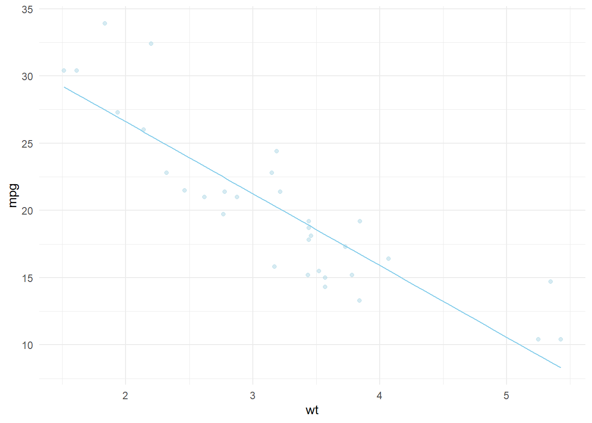
Part (e)
Use your model to predict the average gas mileage (mpg) for a vehicle that weighs 3,000 lbs. (Hint: ?mtcars)
**Must convert 3000 lbs by dividing by 1000, thus it would make it 3*
\[ \hat{Y}_i = 37.29 + (-5.34)(3) \] ANSWER:
## [1] 21.27Part (f)
Write out an interpretation of the slope and intercept of your model. Are both meaningful for this data?
Slope Interpretation: An increase of 1,000 lbs in the weight (\(X_i\)) of a vehicle results in a 5.34 mpg decrease in the average gas mileage of such vehicles(\(Y_i\)).
- Is the slope meaningful? : While the slope is significant, it only looks to be meaningful for vehicles that weigh between 2.5 thousand and 4 thousand pounds. Otherwise this regression does not seem to be a good fit for this data based on the scatterplot.
Intercept Interpretation: The average gas mileage of vehicles that weigh nothing (0 lbs) is estimated to be 37.29 mpg.
- Is the intercept meaningful?: No, the intercept is not meaningful for this data because a vehicle with weight zero is not possible
Before we can really trust the interpretation of and predictions from a regression model, there are important diagnostic checks to perform on the regression. These diagnostics are even more important to perform when p-values or confidence intervals are used as part of the analysis. In future weeks of this course, we will focus in greater detail on the technical details of regression: hypothesis tests, confidence intervals, and diagnostic checks. However, for the sake of completeness, the following problems have run through these technical details, even though we lack full understanding about them for the time being.
Problem 3
Use your regression for the airquality data set in
Problem 1 to complete the following “technical details”
for this regression.
Part (a)
Create a (1) residuals vs. fitted-values plot, (2) Q-Q Plot of the residuals, and (3) residuals vs. order plot.
# Type your code here
par(mfrow=c(1,3))
plot(templm, which=1)
qqPlot(templm$residuals, main="Q-Q Plot",pch= 19, id=FALSE)
plot(templm$residuals, ylab= "Residuals", main="Residuals vs Order")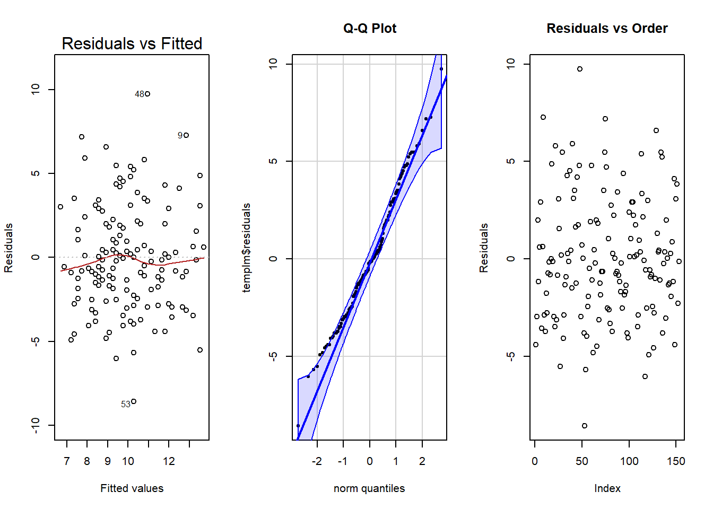
Part (b)
Explain, as best you understand currently, what each of these three plots show for this regression.
Explanation: Everything looks pretty good. The residuals vs. fitted-values plot shows constant variance and a nice linear relation. The Q-Q Plot shows possible problems with normality because some dots go out of bounds, but is fairly good. The residuals vs. order plot shows no problems with time trends, so the error terms can be assumed to be independent.
Part (c)
Report the p-value for the test of these hypotheses for your regression.
Intercept Hypotheses
\[ H_0: \beta_0 = 0 \quad \text{vs.} \quad H_a: \beta_0 \neq 0 \]
- P-VALUE = < 2e-16
Slope Hypotheses
\[ H_0: \beta_1 = 0 \quad \text{vs.} \quad H_a: \beta_1 \neq 0 \]
- P-VALUE = < 2.64e-09
Comment on whether or not we should trust each p-value based on your plots in Part (a).
Should trust each p-value based on your plots in Part (a)?
Intercept Hypotheses p-value? : Yes, it can be trusted because the diagnostic plots all checked out.
Slope Hypotheses p-value? : Yes, it can be trusted because the diagnostic plots all checked out.
Problem 4
Use your regression for the mtcars data set in
Problem 2 to complete the following “technical details”
for this regression.
Part (a)
Create a (1) residuals vs. fitted-values plot, (2) Q-Q Plot of the residuals, and (3) residuals vs. order plot.
# Type your code here
par(mfrow=c(1,3))
plot(carslm, which=1)
qqPlot(carslm$residuals, main="Q-Q Plot",pch= 19, id=FALSE)
plot(carslm$residuals, ylab= "Residuals", main="Residuals vs Order")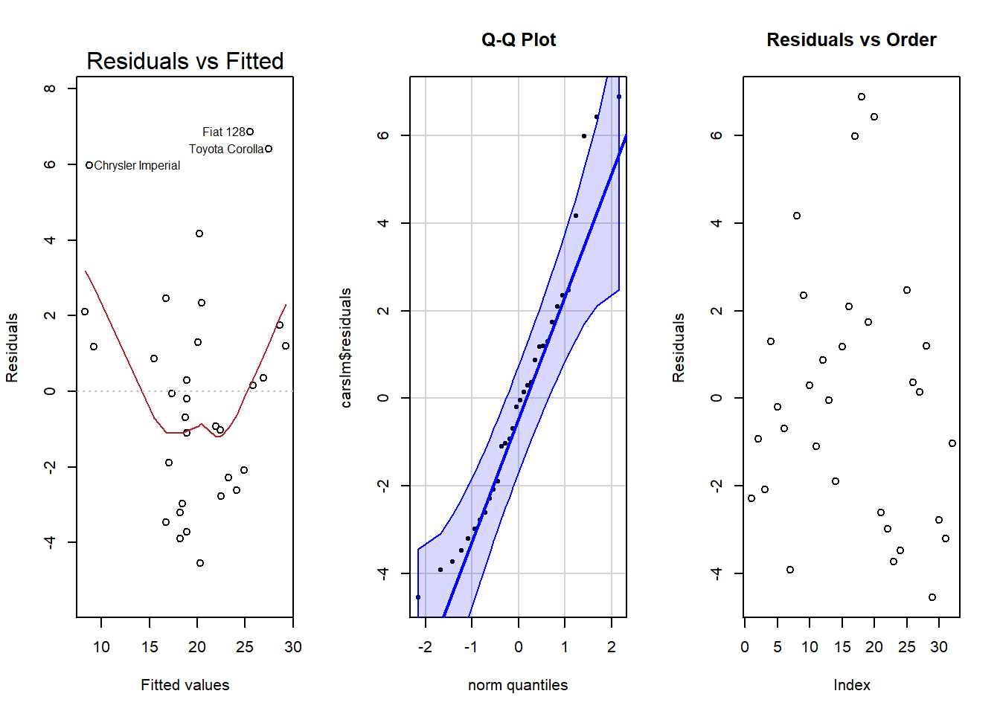
Part (b)
Explain, as best you understand currently, what each of these three plots show for this regression.
Explanation: Everything looks somewhat questionable. The residuals vs. fitted-values plot shows a lack of linearity, which makes it hard to judge constant variance. The Q-Q Plot shows possible problems with normality because some dots go out of bounds, but is fairly good. The residuals vs. order plot shows a possible problem with time trends due to the slight rainbow pattern.
Part (c)
Report the p-value for the test of these hypotheses for your regression.
Intercept Hypotheses
\[ H_0: \beta_0 = 0 \quad \text{vs.} \quad H_a: \beta_0 \neq 0 \]
- P-VALUE = < 2e-16
Slope Hypotheses
\[ H_0: \beta_1 = 0 \quad \text{vs.} \quad H_a: \beta_1 \neq 0 \]
- P-VALUE = 1.29e-10
Comment on whether or not we should trust each p-value based on your plots in Part (a).
Should trust each p-value based on your plots in Part (a)?
Intercept Hypotheses p-value? : No, it should not be trusted because of the lack of linearity and the distance zero is from the current data.
Slope Hypotheses p-value? : No, it should not be fully trusted, though there is likely some sort of trend in the data, because of some problems in the diagnostic plots.
Assessment Quiz - Simple Linear Regression
Run the following commands in R.
library(car) View(Davis) ?Davis
Reduce the data to just the data for the males. Then perform a regression with weight as the response variable and height as the explanatory variable.
Which of the following provides the estimated average weight of males that are 180 cm tall?
Davey <- filter(Davis, sex == "M")
daveylm <- lm(weight ~ height, data=Davey)
summary(daveylm)%>%pander()| Estimate | Std. Error | t value | Pr(>|t|) | |
|---|---|---|---|---|
| (Intercept) | -101.3 | 29.86 | -3.393 | 0.001046 |
| height | 0.9956 | 0.1676 | 5.939 | 5.922e-08 |
| Observations | Residual Std. Error | \(R^2\) | Adjusted \(R^2\) |
|---|---|---|---|
| 88 | 10.07 | 0.2908 | 0.2826 |
-101.33 +(0.9956)*180 =
## [1] 77.878- Run the following commands in R.
View(USArrests) ?USArrests
Perform a regression using this data that explains the average number of murder arrests in cities (per 100,000 in 1973) using the number of assault arrests (per 100,000) in a city.
Select the answer that provides the correct estimate of \(\beta_1\) in the formula:
\(Y_i = \beta_0 + \beta_1X_i + \epsilon_i \sim N(0, \sigma^2)\)
for the USArrests regression described above.
| Estimate | Std. Error | t value | Pr(>|t|) | |
|---|---|---|---|---|
| (Intercept) | 0.6317 | 0.8548 | 0.739 | 0.4635 |
| Assault | 0.04191 | 0.004507 | 9.298 | 2.596e-12 |
| Observations | Residual Std. Error | \(R^2\) | Adjusted \(R^2\) |
|---|---|---|---|
| 50 | 2.629 | 0.643 | 0.6356 |
- Which of the following statements is a correct statement about the graphic shown below?
Note: the “Line of Equality” shows where the line would need to be if the reported heights were equal (on average) to the actual measured heights. Dots that fall on this line show men that knew their actual height before they were officially measured.

Answer: The average actual height gets closer to the reported height for taller men, while shorter men seem more likely to under-report their height, on average.
Class Activity - Estimating Means & Variablility
- Open the airquality dataset in R
View(airquality) ?airquality
- Part 1: Estimating the Mean and Spread of Y
- Creating Histogram graph
ggplot(airquality, aes(x=Temp))+
geom_histogram(binwidth=5, fill="lightblue", color="skyblue") +
labs(title="Maximum daily temperature in defees Fahrenheit at La Gaurdia Airport, NY, USA", x="Temperature in degrees F", y="Number of Days in Temperature Range")| min | Q1 | median | Q3 | max | mean | sd | n | missing |
|---|---|---|---|---|---|---|---|---|
| 56 | 72 | 79 | 85 | 97 | 77.88 | 9.465 | 153 | 0 |
- Spread is SO important! This tells us the guess of this thing that
we are looking at, how good or bad we were in our guess!
- essentially, 2 standard deviations are a good guess (takes up a good percentage of the data)
- Part 2: Estimating the Mean and Spread of Y for Categorical X
weathering <- ggplot(airquality, aes(x=factor(Month), y=Temp)) +
geom_boxplot(fill="lightblue", color="skyblue") +
labs(title="Maximum daily temp in degrees F at La Guardia Airport, NY, USA")
plot(weathering)## Month min Q1 median Q3 max mean
## 1 5 56 60.0 66 69.00 81 65.54839
## 2 6 65 76.0 78 82.75 93 79.10000
## 3 7 73 81.5 84 86.00 92 83.90323
## 4 8 72 79.0 82 88.50 97 83.96774
## 5 9 63 71.0 76 81.00 93 76.90000
## sd n missing
## 1 6.854870 31 0
## 2 6.598589 30 0
## 3 4.315513 31 0
## 4 6.585256 31 0
## 5 8.355671 30 0- Part 3: Estimating the Mean and Spread of Y for Quantitative X
dots : represents actual temperature
line : represents prediction of temperature
x : represents our explanatory variable (VERY important)
ggplot(airquality, aes(x=Wind, y=Temp)) +
geom_point(size=1.5, color="lightblue", alpha= 0.5) +
geom_smooth(method="lm", formula=y~x, se=FALSE, size=0.5,color="skyblue")+
theme_minimal()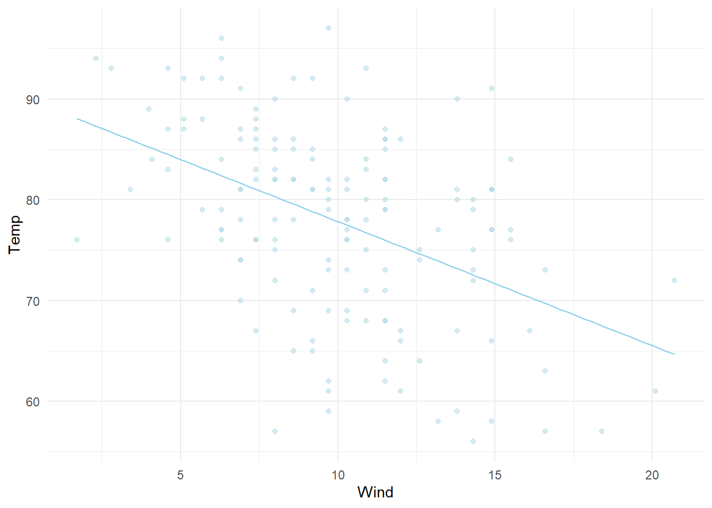
| Estimate | Std. Error | t value | Pr(>|t|) | |
|---|---|---|---|---|
| (Intercept) | 90.13 | 2.052 | 43.92 | 6.69e-88 |
| Wind | -1.23 | 0.1944 | -6.331 | 2.642e-09 |
| Observations | Residual Std. Error | \(R^2\) | Adjusted \(R^2\) |
|---|---|---|---|
| 153 | 8.442 | 0.2098 | 0.2045 |
Use your regression equation to compute the estimated mean Temp for a day (between May and September) with a morning average wind speed (7 AM to 10 AM) of 19 miles per hour:
What is the standard error (estimated standard deviation) of the points around your regression equation?
- how much the dots will spread from the line (how much a dot will vary from our prediction)
Hint: Look for the “residual standard error” in your regression summary output.
Class Activity - The Regression Model

- \(Y_i\) :
- \(\sigma\) : control the tightness of the data (68%)
- \(\epsilon\) : explanatory data value for individuality (gives us our variability, the dots departure from the line .aka the law)
Part 2 : Simulating Data from a Regression Model

residual standard error of this regression came out to be 8.442
the sample size consisted of n = 153 data points
\(\hat{Y}_i\) : the line that we found in the middle of the data (depends on the value of x)
However, the “true regression equation” (or “true law”) governing the relationship between the Mean Max Temp and the Morning Wind Speed is still unknown to us.
Suppose however that God revealed this true law to be governed by the equation:

- the data doesn’t have slope, the law that created the dots have
slope!
- the slope is interpreted as the change in the average y-value for a one unit change in the x-value.
- we can’t tell what an individual will do, but we can tell what the law will do based on the individual
Week 2 | Simple Linear Regression
Skill Quiz - Residuals, Sums of Squares, and R-squared
`orangelm <- lm(circumference ~ age, data=Orange)
summary(orangelm)%>%pander()`
\[\hat{Y_i} = 17.40 + 0.106770 X_i\]
ggplot(Orange, aes(x = age, y = circumference))+ geom_point(color = "orange") + geom_smooth(method = "lm", formula = y~x, se = FALSE, color = "chocolate")+ theme_minimal()
`SSE <- round(sum(residuals(orangelm)^2), 2)
SSR <- round(sum((fitted(orangelm)- mean(Orange$circumference))^2), 2)
SSTO <- round(sum((Orange\(circumference - mean(Orange\)circumference))^2), 2)
R2 <- round(SSR / SSTO, 2)
correlation <- sqrt(R2) if(coef(orangelm)[2]<0) correlation <- -correlation
correlation <- round(correlation, 2)
cat(“SSE:”, SSE, “”) cat(“SSR:”, SSR, “”) cat(“SSTO:”, SSTO, “”) cat(“R-squared (R2):”, R2, “”) cat(“Correlation (r):”, correlation, “”)`
predict(orangelm, data.frame(age=1095, interval="prediction"))
carwtlm <- lm(mpg ~ wt, data=mtcars)
carcyllm <- lm(mpg ~ cyl, data= mtcars)
carhplm <- lm(mpg ~ hp, data=mtcars)
summary(carwtlm)%>%
pander()| Estimate | Std. Error | t value | Pr(>|t|) | |
|---|---|---|---|---|
| (Intercept) | 37.29 | 1.878 | 19.86 | 8.242e-19 |
| wt | -5.344 | 0.5591 | -9.559 | 1.294e-10 |
| Observations | Residual Std. Error | \(R^2\) | Adjusted \(R^2\) |
|---|---|---|---|
| 32 | 3.046 | 0.7528 | 0.7446 |
| Estimate | Std. Error | t value | Pr(>|t|) | |
|---|---|---|---|---|
| (Intercept) | 37.88 | 2.074 | 18.27 | 8.369e-18 |
| cyl | -2.876 | 0.3224 | -8.92 | 6.113e-10 |
| Observations | Residual Std. Error | \(R^2\) | Adjusted \(R^2\) |
|---|---|---|---|
| 32 | 3.206 | 0.7262 | 0.7171 |
| Estimate | Std. Error | t value | Pr(>|t|) | |
|---|---|---|---|---|
| (Intercept) | 30.1 | 1.634 | 18.42 | 6.643e-18 |
| hp | -0.06823 | 0.01012 | -6.742 | 1.788e-07 |
| Observations | Residual Std. Error | \(R^2\) | Adjusted \(R^2\) |
|---|---|---|---|
| 32 | 3.863 | 0.6024 | 0.5892 |
ggplot(mtcars, aes(x=wt, y = mpg)) +
geom_point() +
geom_smooth(method = "lm", formula = y~x, se = FALSE, color = "red")+
labs(title = "Explanatory variable is wt") ggplot(mtcars, aes(x=cyl, y = mpg)) +
geom_point() +
geom_smooth(method = "lm", formula = y~x, se = FALSE, color = "blue")+
labs(title = "Explanatory variable is cyl")ggplot(mtcars, aes(x=hp, y = mpg)) +
geom_point() +
geom_smooth(method = "lm", formula = y~x, se = FALSE, color = "green")+
labs(title = "Explanatory variable is hp") # Just change the lms
SSE.wt <- round(sum(residuals(carwtlm)^2), 2)
# y value (prediciton) goes in the mtcar$Y parts!
SSR.wt <- round(sum((fitted(carwtlm)- mean(mtcars$mpg))^2), 2)
SSTO.wt <- round(sum((mtcars$mpg - mean(mtcars$mpg))^2), 2)
R2.wt <- round(SSR.wt / SSTO.wt, 2)
correlation.wt <- sqrt(R2.wt)
if(coef(carwtlm)[2]<0) correlation.wt <- -correlation.wt
correlation.wt <- round(correlation.wt, 2)
cat("SSE:", SSE.wt, "\n")## SSE: 278.32## SSR: 847.73## SSTO: 1126.05## R-squared (R2): 0.75## Correlation (r): -0.87SSE.cyl <- round(sum(residuals(carcyllm)^2), 2)
# y value goes in the mtcar$Y parts!
SSR.cyl <- round(sum((fitted(carcyllm)- mean(mtcars$mpg))^2), 2)
SSTO.cyl <- round(sum((mtcars$mpg - mean(mtcars$mpg))^2), 2)
R2.cyl <- round(SSR.cyl / SSTO.cyl, 2)
correlation.cyl <- sqrt(R2.cyl)
if(coef(carcyllm)[2]<0) correlation.cyl <- -correlation.cyl
correlation.cyl <- round(correlation.cyl, 2)
cat("SSE:", SSE.cyl, "\n")## SSE: 308.33## SSR: 817.71## SSTO: 1126.05## R-squared (R2): 0.73## Correlation (r): -0.85SSE.hp <- round(sum(residuals(carhplm)^2), 2)
# y value goes in the mtcar$Y parts!
SSR.hp <- round(sum((fitted(carhplm)- mean(mtcars$mpg))^2), 2)
SSTO.hp <- round(sum((mtcars$mpg - mean(mtcars$mpg))^2), 2)
R2.hp <- round(SSR.hp / SSTO.hp, 2)
correlation.hp <- sqrt(R2.hp)
if(coef(carhplm)[2]<0) correlation.hp <- -correlation.hp
correlation.hp <- round(correlation.hp, 2)
cat("SSE:", SSE.hp, "\n")## SSE: 447.67## SSR: 678.37## SSTO: 1126.05## R-squared (R2): 0.6## Correlation (r): -0.77All together:
# Combine the statistics into a data frame
stats_table <- data.frame(
Metric = c("SSE", "SSR", "SSTO", "R_squared", "Correlation"),
wt = c(SSE.wt, SSR.wt, SSTO.wt, R2.wt, correlation.wt),
cyl = c(SSE.cyl, SSR.cyl, SSTO.cyl, R2.cyl, correlation.cyl),
hp = c(SSE.hp, SSR.hp, SSTO.hp, R2.hp, correlation.hp)
)
# Print the table
print(stats_table)## Metric wt cyl hp
## 1 SSE 278.32 308.33 447.67
## 2 SSR 847.73 817.71 678.37
## 3 SSTO 1126.05 1126.05 1126.05
## 4 R_squared 0.75 0.73 0.60
## 5 Correlation -0.87 -0.85 -0.77# Optional: Format the table with nice rounding for display
kable(stats_table, caption = "Summary Statistics for mtcars dataset Regression Models")| Metric | wt | cyl | hp |
|---|---|---|---|
| SSE | 278.32 | 308.33 | 447.67 |
| SSR | 847.73 | 817.71 | 678.37 |
| SSTO | 1126.05 | 1126.05 | 1126.05 |
| R_squared | 0.75 | 0.73 | 0.60 |
| Correlation | -0.87 | -0.85 | -0.77 |
par(mfrow=c(1,3))
plot(carwtlm, which=1)
qqPlot(carwtlm, id=FALSE, main= "Q-Q plot", col="darkred", col.lines = "red", pch = 16)
plot(carwtlm$residuals, main="Residuals vs Order")par(mfrow=c(1,3))
plot(carcyllm, which=1)
qqPlot(carcyllm, id=FALSE, main= "Q-Q plot", col="darkblue", col.lines = "lightblue", pch = 16)
plot(carcyllm$residuals, main="Residuals vs Order")
par(mfrow=c(1,3))
plot(carhplm, which=1)
qqPlot(carhplm, id=FALSE, main= "Q-Q plot", col="darkgreen", col.lines = "green", pch = 16)
plot(carhplm$residuals, main="Residuals vs Order")Assesment Quiz - Residuals, Sums of Squares, and R-squared
- A regression was performed for a sample of n = 5 data points.
The y-values of the regression are: 3.78, 6.08, 6.65, 9.25, and 9.92.
The residuals from the regression are: -0.266, 0.489, -0.486, 0.569, and -0.306.
What is the R-squared value for this regression?
y <- c(3.78, 6.08, 6.65, 9.25, 9.92)
SSTO <- sum( (y - mean(y))^2 )
#SSTO = 24.83372
res <- c(-0.266, 0.489, -0.486, 0.569, -0.306)
SSE <- sum(res^2)
#SSE = 0.96347
rr <- 1 - SSE/SSTO
print(rr)## [1] 0.9612032- Open the mtcars data set in R.
This data can be used to show that the displacement of the engine (disp) is positively correlated with the weight of the vehicle (wt).
What is the R-squared value of this regression?
| Estimate | Std. Error | t value | Pr(>|t|) | |
|---|---|---|---|---|
| (Intercept) | -131.1 | 35.72 | -3.672 | 0.0009326 |
| wt | 112.5 | 10.64 | 10.58 | 1.222e-11 |
| Observations | Residual Std. Error | \(R^2\) | Adjusted \(R^2\) |
|---|---|---|---|
| 32 | 57.94 | 0.7885 | 0.7815 |
- Multiple R-squared: 0.7885
- Open the mtcars data set in R.
Perform a regression of mpg on weight of the vehicle (mpg ~ wt).
A certain statistics teacher at BYU-Idaho drives a 2001 Nissan Sentra that weighs approximately 2,700 lbs and currently gets only 21 mpg. Based on the regression you performed, how many mpg above or below average is this vehicle?
mt.lm <- lm(mpg ~ wt, data=mtcars) #perform the regression
plot(mpg ~ wt, data=mtcars) #draw the regression (not needed, but nice)
abline(mt.lm) #add the regression line (not needed, but nice)
points(2.7, 21, pch=16, col="skyblue") #add the Nissan Sentra value (not needed, but nice)
predict(mt.lm, data.frame(wt=2.7)) #get predicted value for Nissan Sentra## 1
## 22.85505## [1] 1## [1] 22.85505## [1] -1.85505- Residual : -1.85505
Class Activity - Residuals & Sum of Squares
Part 1: Visualizing Residuals:
- What is a residual?
- A residual is the distance between the predicted value and the actual value
- In which direction (vertical, horizontal, diagonal) is a residual? Why?
- The direction of a residual is vertical from the line.
- What happens to the magnitude of the residuals as you move the line to the “center” of the data? Or away from the data?
- The farther the line from the residuals, the bigger the distance.
Part 2: Visualizing Sums of Squared Residuals
- What do the shaded “squares” that appeared next to each residual bar in the scatterplot represent?
- The shaded “squares” represent the
- What does the length of the shaded bar under “Squared Residuals” represent?
- The length of the shaded bar under “Squared Residuals” represents
- Why would the phrase “Least Squares Regression Line” be a good name for the “Best-Fit Line”?
- The phrase “Least Squares Regression Line” would be a good name for the “Best-Fit Line” because we are taking data and dumbing it down into an average
Part 3: Visualizing R-squared
Correlation (r)-> something??
R^2 -> the proportion of variation in Y explained by the regression
- SOOOO useful
- What does the length of the shaded bar under “Squared Residuals” show?
- the length of the shaded bar under “Squared Residuals” shows the adding up of the area of every box spanned by each residual
- How is the “Sum of Squared Residuals” and “Correlation Coefficient” effected by the distance of the dots from the line?
correlation -> farther from the line, big
r^2 -> farther form the line, smaller
inverse relationship between r and r^2
- What happens to the “Sum of Squared Residuals” and “Correlation Coefficient” if you put all of the dots exactly on the line?
everything has been explained and there is no room for error
we want a BIG SSR!!!!
Class Activity - Sums of Squares and R-squared
Part 1 - Sums of Squares
First, what is a sum?
Part 2 - Sums of Squares in Regression
reduces variability
dashed lines
Class Activity - Residuals, Sums of Squares, and R-Squared in Review
First, residuals are the key to obtaining the “least squares estimates” of the regression parameters \(\beta_0\)and \(\beta_1\)
Second, residuals are an important part in measuring the \(R^2\) value of a regression, which is the proportion of variation in Y explained by the regression model.
Third, residuals give insight about how much an individual of a given x-value differs from average in their y-value.
Fourth, (and this one you haven’t seen yet) residuals can be used to estimate the variance parameter of a regression, i.e., in the equation
\[Y_i = \beta_0 + \beta_1X_i + \epsilon_i \text{where} \sim N(0,\sigma^2)\]
Follow along with your instructor on how this is done. Then, explain to a peer what MSE is, and how it is similar to the Variance formula in your Numerical Summaries page of your Math 325 Notebook.
- Fifth, (and we will see this one in more detail next week) residuals can be used to determine if a linear regression model is appropriate for a given data set.
Class Activity - Diagnosing the Model
- lack linearity? -> EVERYTHING (because all our assumptions are made in the linear world)
- violated constant variance? -> DONT TRUST SIGMA (RSE)
- no normalitiy? -> ehhhhhhhhhhhhhhh
- putting bent things into a lens that brings us into the linear view
(re-scaling our data)
- puts the data into a new world/space to see the data better
- likelihood changes the value of \(\mu\) and how likely \(\mu\) would be
Week 3 | Diagnosing the Model & Model Tranformations
Skill Quiz - Regression Diagnositcs & Transformation
Problem 1:
Open the Davis dataset in R, found in
library(car). As stated in the help file for this data set,
“The subjects were men and women engaged in regular exercise.”
Perform a simple linear regression of the height of the individual based on their weight.
PART (A)
Type out the mathematical equation for this regression model and label both \(Y\) and \(X\) in the equation.
\[ \underbrace{Y_i}_\text{height} = \beta_0 + \beta_1 \underbrace{X_i}_\text{weight} + \epsilon_i \quad \text{where} \epsilon_i \sim N(0, \sigma^2) \]
PART (B)
Plot a scatterplot of the data with your regression line overlaid.
PART (C)
Create a residuals vs fitted-values plot for this regression. What does this plot show?
What does the plot SHOW? - The point in the
bottom right corner of the plot labeled “12” (observation 12) appears to
be a dramatic outlier causing the regression line to be pulled towards
it.
PART (D)
State and interpret the slope, y-intercept, and \(R^2\) of this regression. Are they meaningful for this data under the current regression?
| Estimate | Std. Error | t value | Pr(>|t|) | |
|---|---|---|---|---|
| (Intercept) | 160.1 | 3.747 | 42.73 | 6.862e-102 |
| weight | 0.1509 | 0.05551 | 2.718 | 0.007152 |
| Observations | Residual Std. Error | \(R^2\) | Adjusted \(R^2\) |
|---|---|---|---|
| 200 | 11.82 | 0.03597 | 0.0311 |
| Part | Meaning |
|---|---|
| Slope = 0.15 | The slope is the increase int eh average height per one pound change in weight. |
| Y- intercept = 160.09 | The y-intercept is the average height of exercising individuals who have a weight of zero (To be put nicely, a bunch of baloga) |
| \(R^2\) = 0.04 | The proportion of variation in height explained by this regression (with the outlier included) is essentially zero |
Are these values meaningful for this data under the current regression?
- No, these values are not currently very meaningful because they are being strongly skewed by the presence of the outlier (observation number 12).
PART (E)
Run View(Davis) in your Console. What do you notice
about observation #12 in this data set?
- It looks like they accidently reverse the weight and height.
Perform a second regression for this data with observation #12 removed. Recreate the scatterplot of Part (b) with two regression lines showing this time. The first regression line should include the outlier. The second should exclude the outlier. Include a legend to show which line is which.
daniel <- filter(Davis, weight != "166")
dangdaniel <- lm(height ~ weight, data = daniel)
ggplot(Davis, aes(x = weight, y = height)) +
geom_point(size = 1.5, shape = 19, color = "darkgrey", alpha = 1) +
geom_smooth(method = "lm", formula = y ~ x, se = FALSE, aes(color = "Fitted Regression (with outlier)"), size = 1.5) +
geom_smooth(data = daniel, aes(x = weight, y = height, color = "Fitted Regression (outlier removed)"), method = "lm", formula = y ~ x, se = FALSE, size = 1.5) +
scale_color_manual(values = c("Fitted Regression (with outlier)" = "gray", "Fitted Regression (outlier removed)" = "skyblue")) +
labs(color= "Regression Lines") +
theme_classic() +
theme(legend.position = c(0.11,0.13)) +
labs(title = "Exercising Individuals (Davis data set)", x= "Measured Weight of Individual in kg (weight)", y= "Measured Height of Individual in cm (height)")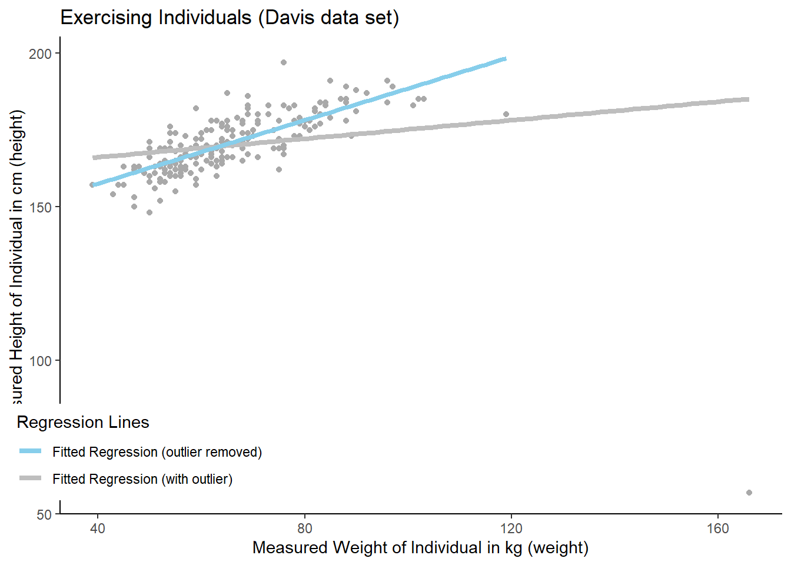
PART (F)
Compute the slope, y-intercept, and \(R^2\) value for the regression with the outlier removed. compare the results to the values when the outlier was present.
| Estimate | Std. Error | t value | Pr(>|t|) | |
|---|---|---|---|---|
| (Intercept) | 136.8 | 2.029 | 67.45 | 4.466e-138 |
| weight | 0.5169 | 0.03044 | 16.98 | 2.009e-40 |
| Observations | Residual Std. Error | \(R^2\) | Adjusted \(R^2\) |
|---|---|---|---|
| 199 | 5.716 | 0.594 | 0.592 |
WITHOUT outlier:
- Slope = 0.52
- Y-intercept = 136.84
- \(R^2\) = 0.59
WITH outlier:
- Slope = 0.15
- Y-intercept = 160.09
- \(R^2\) = 0.04
PART (G)
Create a residuals vs fitted-values plot for the regression with the outlier removed. How do things look now?
- This plot shows possible slight problems with linearity (a slight, but consistent bend in the red line) but there do not appear to be any problems with the variance or with outliers.
Problem 2:
Open the Prestige data set found in
library(car).
Perform a regression that explains the 1971 average annual income from jobs according to their “Pineo-Porter prestige score for occupation, from a social survey conducted in the mod-1960’s.”
PART (A)
Plot the data and fitted simple linear regression line.
presto <- lm(income ~ prestige, data= Prestige)
ggplot(Prestige, aes(x = prestige, y=income)) +
geom_point(size = 1.5, shape = 19, color = "green", alpha = 1) +
geom_smooth(method = "lm", formula = y ~ x, se = FALSE, color = "grey")+
labs(title= "Greater Prestige linked to Greater Income (Prestige data set)", x= "Prestige Ranking of Occupation(prestige)", y="Average Annual Income USD (income)")+
theme_classic()- RSE is sigma! (apparently)
PART (B)
State the estimated values for \(\beta_0\), \(\beta_1\), and \(\sigma\) for this regression.
| Estimate | Std. Error | t value | Pr(>|t|) | |
|---|---|---|---|---|
| (Intercept) | -1465 | 860.5 | -1.703 | 0.09175 |
| prestige | 176.4 | 17.26 | 10.22 | 3.192e-17 |
| Observations | Residual Std. Error | \(R^2\) | Adjusted \(R^2\) |
|---|---|---|---|
| 102 | 2984 | 0.5111 | 0.5062 |
- \(\beta_0\) = -1465.03
- \(\beta_1\) = 176.43
- \(\sigma\) = 2984
PART (C)
Create a residuals vs fitted-values plot and a Q-Q Plot of the residuals for this regression.

PART (D)
Comment on any difficulties the diagnostic plots in Part (c) reveal about the regression.
- Normality of the error terms is violated, as shown by the points going “out of bounds” in the Q-Q Plot. However, these problems are likely due to the increasing variance of the residuals shown in the residuals vs fitted-values plot. There even may be some problems with linearity of the data because of the three outliers in the top right of the graph pulling the regression line up (shown by the red line going down).
Comment on which estimates of Part (b) are likely effected by these difficulties.
- The slope and estimate of the error variance are almost certainly being negatively effected by the increasing variance and three outliers
Problem 3:
Open the Burt data set from library(car).
This data set is famous for being fraudulent, or fake. See ?Burt for more details. One of the first indicators that it was fraudulent was revealed by regressing IQbio ~ IQfoster. This regression was just a little too good to be real. (Note that for social science data, like this data, \(R^2\) values above 0.3 are impressive. Values above 0.7 are rare.)
PART (A)
Plot the data and fitted regression line. State the estimated values of \(\beta_0\), \(\beta_1\), and \(\sigma\) as well as the \(R^2\) of the regression.
ernie <- lm(IQbio ~ IQfoster, data= Burt)
ggplot(Burt, aes(x= IQfoster, y = IQbio))+
geom_point(size = 1.5, shape = 19, color = "wheat", alpha=1.5) +
geom_smooth(method = "lm",formula = y~x, se=FALSE, color = "burlywood")+
labs(title= "Linked IQ? \n (Burt data set)", x="Twin IQ, Raised by Foster Parents (IQfoster)", y= "Twin IQ, Raised by Biological Parents (IQbio)")+
theme_classic()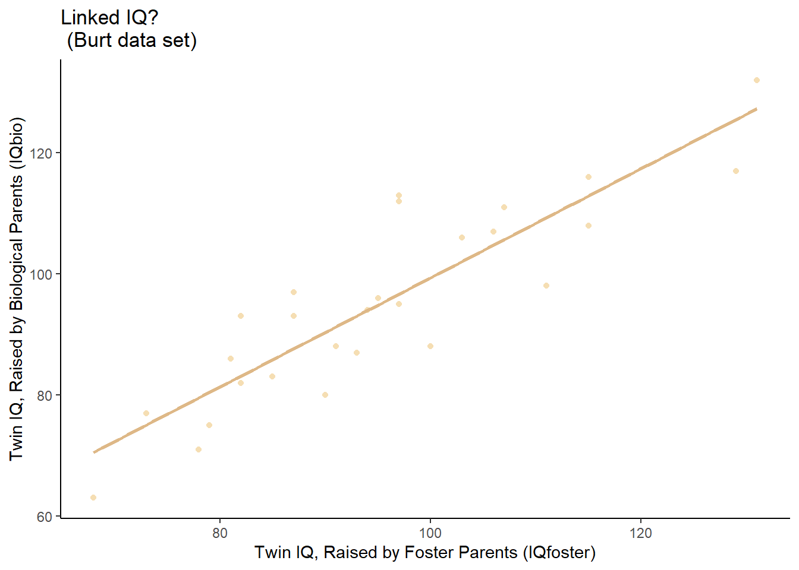
PART (B)
Create a (1) residuals vs. fitted-values plot, (2) Q-Q Plot of the residuals, and (3) residuals vs. order plot for this regression. Are any problems with regression assumption violations visible in these plots?
PART (C)
Comment on what the three diagnostic plots of Part (b) show for the regression.
- They show a fairly nice regression. There may be some slight difficulties with linearity due to the curved red line in the residuals vs fitted-values plot, and points 23 and 24 are somewhat far away from the rest of the data, but otherwise, things are impressively nice.
Problem 4:
Open the mtcars data set in R.
Perform a regression of mpg explained by the displacement of the vehicle’s engine.
PART (A)
Plot the data and fitted regression line. State the estimated values of \(\beta_0\), \(\beta_1\), and \(\sigma\) as well as the \(R^2\) of the regression.
haveyouseenthecarsmovie <- lm(mpg ~ disp, data= mtcars)
ggplot(mtcars, aes(x= disp, y= mpg))+
geom_point(size = 1.5, shape = 19, color = "limegreen", alpha = 2) +
geom_smooth(method = "lm",formula = y~x, se = FALSE, color = "limegreen") +
labs(title = "Reduced Fuel Efficiency \n (mtcars data set)", x= "Engine Displacement cu. in. (disp)", y= "Gas Mileage (mpg)") +
theme_classic()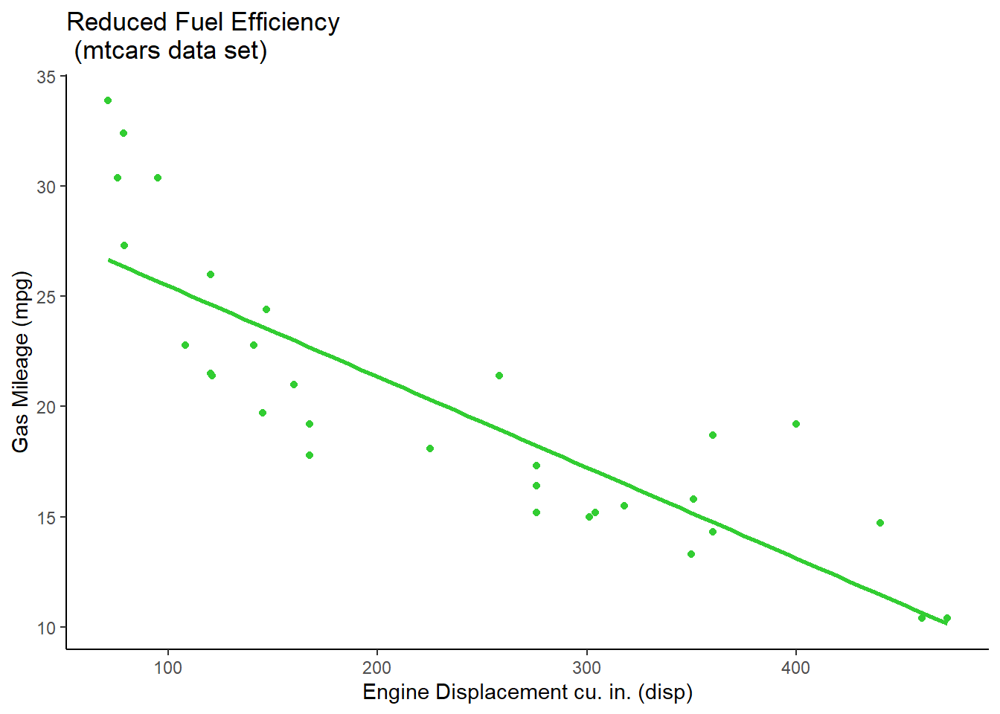
| Estimate | Std. Error | t value | Pr(>|t|) | |
|---|---|---|---|---|
| (Intercept) | 29.6 | 1.23 | 24.07 | 3.577e-21 |
| disp | -0.04122 | 0.004712 | -8.747 | 9.38e-10 |
| Observations | Residual Std. Error | \(R^2\) | Adjusted \(R^2\) |
|---|---|---|---|
| 32 | 3.251 | 0.7183 | 0.709 |
- \(b_0\) = 29.60
- \(b_1\) = -0.04
- Residual Standard Error (RSE) = 3.25
- \(R^2\) = 0.72
PART (B)
Create a (1) residuals vs. fitted-values plot, (2) Q-Q Plot of the residuals, and (3) residuals vs. order plot for this regression. Are any problems with regression assumption violations visible in these plots?
par(mfrow=c(1,3))
plot(haveyouseenthecarsmovie, which=1)
qqPlot(haveyouseenthecarsmovie$residuals, main="Q-Q Plot", col.lines="blue",pch= 19, id=FALSE)
plot(haveyouseenthecarsmovie$residuals, ylab= "Residuals", main="Residuals vs Order")PART (C)
Comment on what the three diagnostic plots of Part (b) show for the validity of the values computed in Part (a).
- Residual vs. Fitted plot: violates the linearity assumption meaning our data lack linearity, everything is no longer meaningful
Problem 5:
Open the Orange data set found in R.
Perform a regression that explains the circumference of the trunk of the orange tree as the tree ages.
PART (A)
Plot the data and fitted simple linear regression line.
`ilikeapples <- lm(circumference ~ age, data=Orange)
ggplot(Orange, aes(x= age, y= circumference))+ geom_point(size = 1.5, shape = 19, color = “orange”, alpha = 1.5) + geom_smooth(method = “lm”, formula = y~x, se= FALSE, color = “grey”) + labs(title = “Growth of Orange Trees”, x = “Age of Tree in Days”, y = “Circumference of Tree(mm)”)+ theme_classic()`
PART (B)
State the estimated values for \(\beta_0\), \(\beta_1\), and \(\sigma\) for this regression.
summary(ilikeapples)%>%pander()
PART (C)
Create a residuals vs fitted-values plot and a Q-Q Plot of the residuals for this regression.
`par(mfrow=c(1,3))
plot(ilikeapples, which=1)
qqPlot(ilikeapples$residuals, main=“Q-Q Plot”, col.lines=“blue”,pch= 19, id=FALSE)
plot(ilikeapples$residuals, ylab= “Residuals”, main=“Residuals vs Order”)`
PART (D)
Comment on any difficulties the diagnostic plots in Part (c) reveal about the regression.
Comment on which estimates of Part (b) are likely effected by these difficulties.
Difficulties:
- Residuals vs Fitted: megaphoning!!!!
- RSE should not be considered meaningful as it will be too large on one end of the regression and too small on the other end
PART (E)
Perform a Box-Cox analysis of the regression. Which Y-transformation is suggested?
boxCox(ilikeapples)
- The suggested y-transformation is 0.5
- you will sqrt()!
PART (F)
Perform a regression with the transformed y-variable. Plot the regression in the transformed units. Diagnose the fit of the regression on the transformed data.
`notmyapples <- lm(sqrt(circumference) ~ age, data=Orange) b.sqrt <- notmyapples$coef
ggplot(Orange, aes(x= age, y= sqrt(circumference)))+ geom_point(size = 1.5, shape = 19, color = “orange”, alpha = 1.5) + geom_smooth(method = “lm”, formula = y~x, se= FALSE, color = “grey”) + labs(title = “Growth of Orange Trees”, x = “Age of Tree in Days”, y = “Circumference of Tree(mm)”)+ theme_classic()
par(mfrow=c(1,3))
plot(notmyapples, which=1)
qqPlot(notmyapples$residuals, main=“Q-Q Plot”, col.lines=“blue”,pch= 19, id=FALSE)
plot(notmyapples$residuals, ylab= “Residuals”, main=“Residuals vs Order”)`
Which of the following have actually become more problematic when comparing the diagnostic plots of the original regression to the diagnostic plots of the transformed regression?
- Linearity is more violated in the transformation regression than it was in the original units
- Normality is more violated in the transformed regression than it was in the original units
PART (G)
Write out the fitted model for \(\hat{Y}_i'\). Then solve the transformed model back into the original units for \(\hat{Y}_i\). Then compute the following.
When \(X_i = 500\), then \(\hat{Y}_i = \ldots\).
\[ \hat{Y}_i' = 5.3408 + 0.0055 X_i \]
\[ \sqrt{\hat{Y}_i'} = 5.3408 + 0.0055 X_i \]
\[ \hat{Y}_i = (5.3408 + 0.0055 X_i)^2 \] $ = $
## [1] 65.46104PART (H)
Plot the data in the original units. Place the transformed line, back in the original units, on this plot.
`plot(circumference ~ age, data=Orange, pch=16, col=“orangered”, main=“Growth of Orange Trees”, xlab=“Age of Tree in Days”, ylab=“Circumference of Tree (mm)”)
abline(ilikeapples, col= “gray”)
curve( (b.sqrt[1] + b.sqrt[2]*x)^2 , add=TRUE, col=“orangered”)`
Assesment Quiz - Diagnosing the Model and Model Transformations
- A regression is performed and the following plot created. Which of the following correctly shows the original scatterplot of this regression?
Residual Plot:

Original Plot:

- A regression is performed using \(\hat{Y_i'} = Y_i^{-2}\) and the summary output below is obtained.

Select the appropriate equation for \(\hat{Y_i}\)
Answer: \(\hat{Y_i} = \frac{1}{\sqrt{830.13 - 10.93 X_i}}\)
- Which of these regression functions depicted on the scatterplot is the one suggested by the Box-Cox transformation?
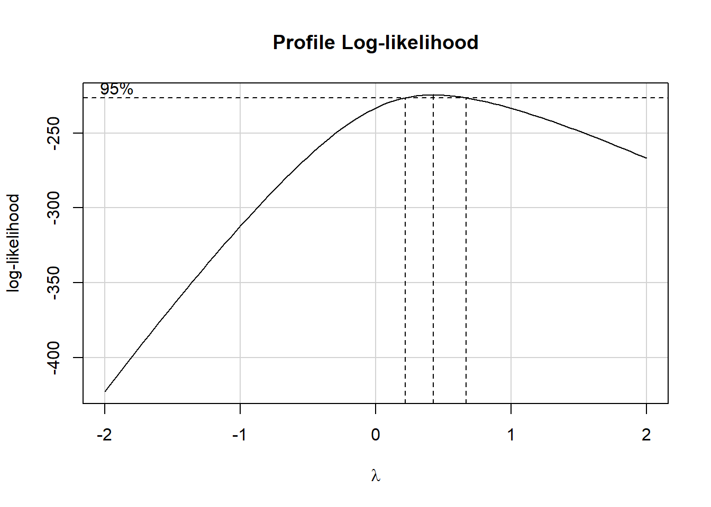
Base R Version:
lm.scoop <- lm(sqrt(dist) ~ speed, data = cars)
b.scoop <- coef(lm.scoop)
plot(dist ~ speed, data = cars)
curve( (b.scoop[1] + b.scoop[2]*x)^2, add=TRUE, col = "yellow")
abline(kachow)
ggplot Version:
ggplot(Orange, aes(x=age, y=circumference)) + geom_point(color = "orangered") + stat_function(fun=function(x)(b.scoop[1] + b.scoop[2]*x)^2, color= "yellow") + theme_classic()
Class Activity - Diagnosing the Model
Note: located in your Linear Regression Tab of the Notebook, in the “Residual Plots & Regression Assumptions”
Problems from Failed Assumptions: If these things are violated, what is ruined?
- Lack linearity? -> EVERYTHING (because all our
assumptions are made in the linear world)
- Identifier: Residuals versus Fitted-values Plot are messed up, showing curved trend
- Unconstant Variance? -> DONT TRUST SIGMA (RSE)
- Identifier: Residuals versus Fitted values Plot shows a megaphone
- No Normalitiy? -> ehhhhhhhhhhhhhhh
- honestly, not a big problem
- Independence Assumption Violated? -> RSE is HUGE
HUGE
- Identifier: Residuals vs Order has a trend, linear lookin’
- putting bent things into a lens that brings us into the linear view
(re-scaling our data)
- puts the data into a new world/space to see the data better
- likelihood changes the value of and how likely \(\mu\) would be
Three Regression Assumption Plots
- Residuals versus Fitted-values Plot: Checks Assumptions #1 and #3
- #1: The regression relation between Y and X is linear.
- #3: The variance of the error terms is constant over all X values.
- Satisfied if…
- No apparent trends -> linear relation
- vertical spread is roughly consistant -> constant variance
- Q-Q Plot of Residuals: Checks Assumption #2
- #2: The error terms are normally distributed with \(E{ϵi}=0\)
- Satisfied if …
- Hugging/ within bounds of normality -> normal
- curved up on both ends -> right skewed
- curved down on both ends -> left skewed
- S shaped -> heavy tailed
- Residuals versus Order Plot: Checks Assumption #5
- #5: The error terms are independent
- Satified if…
- no dramatic trends present
Class Activity - Introduction to Transformations
Note: Find more in the Linear Regression Tab and find the “Transformation” section for more info

- boxCox(lm_name) is your bestest friend to give advice on what to do!
Class Activity - Graphing Transformations
Part 1 - Graphing Transformations
- Run the two of the following codes in R.
- Base Graphic
`lm.log <- lm(log(circumference) ~ age, data=Orange) b.log <- coef(lm.log)
lm.sqrt <-lm(sqrt(circumference) ~ age, data=Orange) b.sqrt <- coef(lm.sqrt)
lm.1oy <- lm(1/circumference ~ age, data=Orange) b.1oy <- coef(lm.1oy)
lm.y <- lm(circumference ~ age, data=Orange) b.y <- coef(lm.y)
lm.2 <- lm(circumference^2 ~ age, data=Orange) b.2 <- coef(lm.2)
lm.ss <- lm(sqrt(sqrt(circumference)) ~ age, data=Orange) b.ss <- coef(lm.ss)
plot(circumference ~ age, data=Orange, pch=16, col=“orangered”, main=“Growth of Orange Trees”, xlab=“Age of Tree in Days”, ylab=“Circumference of Tree (mm)”) legend(“topleft”, legend=c(“1”,“2”,“3”,“4”,“5”,“6”), lty=1, col=c(1,2,3,4,5,6))
curve( exp(b.log[1] + b.log[2]*x) , add=TRUE, col=1)
curve( (b.sqrt[1] + b.sqrt[2]*x)^2 , add=TRUE, col=2)
curve( 1/(b.1oy[1] + b.1oy[2]*x) , add=TRUE, col=3)
curve( b.y[1] + b.y[2]*x , add=TRUE, col=4)
curve( sqrt(b.2[1] + b.2[2]*x) , add=TRUE, col=5)
curve( (b.ss[1] + b.ss[2]*x)^4 , add=TRUE, col=6)`
- ggplot Graphic
ggplot(Orange, aes(x=age, y=circumference)) + geom_point(color="orangered") + stat_function(fun=function(x) exp(b.log[1] + b.log[2]*x), aes(color="log(y)")) + stat_function(fun=function(x) (b.sqrt[1] + b.sqrt[2]*x)^2, aes(color="sqrt(y)")) + stat_function(fun=function(x) 1/(b.1oy[1] + b.1oy[2]*x), aes(color="1/y")) + stat_function(fun=function(x) b.y[1] + b.y[2]*x, aes(color="y")) + stat_function(fun=function(x) sqrt(b.2[1] + b.2[2]*x), aes(color="y^2")) + stat_function(fun=function(x) (b.ss[1] + b.ss[2]*x)^4, aes(color="sqrt(sqrt(y))")) + labs(title="Growth of Orange Trees", x="Age of Tree in Days", y="Circumference of Tree (mm)") + theme_bw( )
- Add 6 regression functions onto the scatterplot
from above.
- A regression of \(Y_i' = log(Y_i)\)
- A regression of \(Y_i' = \sqrt{Y_i}\)
- A regression of \(Y_i' = 1/Y_i\)
- A regression of \(Y_i' = Y_i\)
- A regression of \(Y_i' = Y_i^2\)
- A regression of \(Y_i' =\) some transformation of Y that you think will work better than any of the others currently showing on the plot.
`lm.log <- lm(log(circumference) ~ age, data=Orange) b.log <- coef(lm.log)
lm.sqrt <-lm(sqrt(circumference) ~ age, data=Orange) b.sqrt <- coef(lm.sqrt)
lm.1oy <- lm(1/circumference ~ age, data=Orange) b.1oy <- coef(lm.1oy)
lm.y <- lm(circumference ~ age, data=Orange) b.y <- coef(lm.y)
lm.2 <- lm(circumference^2 ~ age, data=Orange) b.2 <- coef(lm.2)
lm.ss <- lm(sqrt(sqrt(circumference)) ~ age, data=Orange) b.ss <- coef(lm.ss)`
boxCox(lm.y)
Part 2 - The Mathematics of Transformations
- Three equations we want to see:
- Prime space : \(\hat{Y_i'} = 1.277 + 03224X_i\)
- What you use for the Prime space: \(\sqrt{\hat{Y_i'}} = 1.277 + 03224X_i\)
- The solving back : \(\hat{Y_i} = (1.277 + 03224X_i)^2\)
- will look a lot like the curve code!!
Other Mathematics Transformations:
- \(Y_i'= \sqrt{Y_i} = Y_i^2\)
- \(Y_i'= log(Y_i) = e^{Y_i}\)
- \(Y_i'= 1/Y_i = Y_i\)
Part 3 - A Danger of Transformations
Predictions outside of the x-axis range of your data can be especially dangerous when using transformations. (They are almost always dangerous actually.) - To see this, refit each of your six regressions from above on a reduced version of the Orange data called “YoungOrange” that keeps only age < 1200. - Then, draw each of these six regressions on a new version of the scatterplot from the Instructions (above). The scatterplot should show the full data set. But the regressions will be based on just the trees aged 0 - 1200 days.
`YoungOrange <- Orange %>% filter(age < 1200)
lm.log <- lm(log(circumference) ~ age, data=YoungOrange) b.log <- coef(lm.log)
lm.sqrt <-lm(sqrt(circumference) ~ age, data=YoungOrange) b.sqrt <- coef(lm.sqrt)
lm.1oy <- lm(1/circumference ~ age, data=YoungOrange) b.1oy <- coef(lm.1oy)
lm.y <- lm(circumference ~ age, data=YoungOrange) b.y <- coef(lm.y)
lm.2 <- lm(circumference^2 ~ age, data=YoungOrange) b.2 <- coef(lm.2)
lm.ss <- lm(sqrt(sqrt(circumference)) ~ age, data=YoungOrange) b.ss <- coef(lm.ss)`
- Another ggplot Graphic
ggplot(Orange, aes(x=age, y=circumference)) + geom_point(color="orangered") + stat_function(fun=function(x) exp(b.log[1] + b.log[2]*x), aes(color="log(y)")) + stat_function(fun=function(x) (b.sqrt[1] + b.sqrt[2]*x)^2, aes(color="sqrt(y)")) + stat_function(fun=function(x) 1/(b.1oy[1] + b.1oy[2]*x), aes(color="1/y")) + stat_function(fun=function(x) b.y[1] + b.y[2]*x, aes(color="y")) + stat_function(fun=function(x) sqrt(b.2[1] + b.2[2]*x), aes(color="y^2")) + stat_function(fun=function(x) (b.ss[1] + b.ss[2]*x)^4, aes(color="sqrt(sqrt(y))")) + ylim(c(0,400))+ labs(title="Growth of Orange Trees", x="Age of Tree in Days", y="Circumference of Tree (mm)") + theme_bw( )
Week 4 | Hypothesis Tests for Model Parameters
Skill Quiz - Hypothesis Test for Model Parameters
Problem 1 Install the Ecdat library in
R: install.packages("Ecdat").
From library(Ecdat) open the Caschool data
set in R. As stated in the help file for this data set, this data is a
collection of measurements on 420 different school districts from
California during the 1998-1999 school year.
The school districts in California offer a reduced-price lunch program. This is in a way, a measure of the poverty of the student body of the school district. We will assume that the higher the percentage of participants, the greater the general level of poverty. The question is, does the poverty level (or at least the percentage of participation in the reduced-lunch program) predict how well the student body will perform overall on a standardized test?
> ?Caschool
> View(Caschool)
Part (a)
Type out the mathematical equation for this regression model and label both \(Y\) and \(X\) in the equation.
\[ \underbrace{Y_i}_\text{test score} = \beta_0 + \beta_1 \underbrace{X_i}_\text{lunch percentage} + \epsilon_i \]
Part (b)
Plot a scatterplot of the data with your regression line overlaid. Write out the fitted regression equation.
library(Ecdat)
lunch <- lm(testscr ~ mealpct,data= Caschool)
plot(testscr ~ mealpct,data= Caschool)
abline(lunch)\[ \hat{Y}_i = 681.43952 + (-0.61029)X_i \]
Part (c)
Report the test statistics and p-values for the following hypotheses.
\[ \begin{array}{l} H_0: \beta_0 = 0 \\ H_a: \beta_0 \neq 0 \\ \end{array} \quad \begin{array}{l} H_0: \beta_1 = 0 \\ H_a: \beta_1 \neq 0 \\ \end{array} \]
| Estimate | Std. Error | t value | Pr(>|t|) | |
|---|---|---|---|---|
| (Intercept) | 681.4 | 0.8894 | 766.2 | 0 |
| mealpct | -0.6103 | 0.01701 | -35.87 | 1.188e-129 |
| Observations | Residual Std. Error | \(R^2\) | Adjusted \(R^2\) |
|---|---|---|---|
| 420 | 9.447 | 0.7548 | 0.7542 |
The test statistics in this case provide the number of standard errors that the estimated values of the parameter sits from the hypothesized value of the true parameter.
Part (d)
State the slope, y-intercept, and \(R^2\) of this regression. Further, provide 95% confidence intervals for the slope and intercept. Interpret the values.
| Estimate | Std. Error | t value | Pr(>|t|) | |
|---|---|---|---|---|
| (Intercept) | 681.4 | 0.8894 | 766.2 | 0 |
| mealpct | -0.6103 | 0.01701 | -35.87 | 1.188e-129 |
| Observations | Residual Std. Error | \(R^2\) | Adjusted \(R^2\) |
|---|---|---|---|
| 420 | 9.447 | 0.7548 | 0.7542 |
## 2.5 % 97.5 %
## (Intercept) 679.6912170 683.1878250
## mealpct -0.6437314 -0.5768403As shown by the R-squared value the regression is fairly good at explaining the variablility in Y. This is further witness by how accurate the confidence intervals are for the slope and intercept.
Part (e)
Create a residuals vs fitted-values plot and Q-Q Plot of the residuals for this regression. What do these plots show?
Answer: The residauls vs fitted-values plot shows a nice linear pattern and very constant variance with the exception of three possible outliers in points 367, 163, and 180 - The Q-Q Plot shows the residuals can very safely be assumed to be normally distributed. To prove that you made the plot, the dot in the top-right of the plot is labeled as point #367
Problem 2
Open the Clothing data set from library(Ecdat).
Although this data is from 1990, it contains two interesting
variables (1) the total tsales of the clothing stores and
(2) the average number of hours worked per employee during the year,
hourspw.
> ?Clothing
> View(Clothing)
Part (a)
Type out the mathematical equation for this regression model and label both \(Y\) and \(X\) in the equation.
\[ \underbrace{Y_i}_\text{Total Sales} = \beta_0 + \beta_1 \underbrace{X_i}_\text{Hours Per Employees} + \epsilon_i \]
- \(Y_i\) : Total Sales
- \(X_i\) : Hours Per Employee
- $_0 $ : Average Total Sales when Zero Hours are Worked per Employee
- \(\beta_1\) : Change in Average Total Sales as Hours Worked per Employee increases by 1
- \(\epsilon_i\) : Each clothing companies difference from the average Total Sales
Part (b)
Plot a scatterplot of the data with your regression line overlaid. Write out the fitted regression equation.
mahclothes <- lm(tsales ~ hourspw,data= Clothing)
plot(tsales ~ hourspw,data= Clothing)
abline(mahclothes)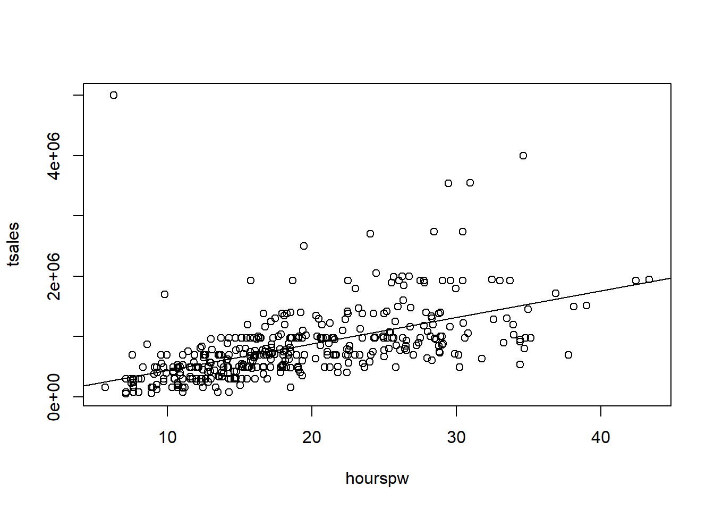
\[ \hat{Y}_i = b_0 + b_1 X_i + \epsilon_i \]
- \(Y_i\) : The estimated average Total Sales.
- \(X_i\) : The Hours Worked per Employee
- $b_0 $ : The estimated average Total Sales when the Hours Worked per Employee is zero.
- \(b_1\) : The estimated change in the average Total Sales per 1 hour increase in Hours Worked per Employee
- \(\epsilon_i\) : Is not used in the fitted regression equation because it only belongs with the equation for the actual Yi values.
Part (c)
Report the test statistics and p-values given by your summary(…) in R for the following hypotheses.
\[ \begin{array}{l} H_0: \beta_0 = 0 \\ H_a: \beta_0 \neq 0 \\ \end{array} \quad \begin{array}{l} H_0: \beta_1 = 0 \\ H_a: \beta_1 \neq 0 \\ \end{array} \]
| Estimate | Std. Error | t value | Pr(>|t|) | |
|---|---|---|---|---|
| (Intercept) | 1745 | 67479 | 0.02585 | 0.9794 |
| hourspw | 43885 | 3320 | 13.22 | 2.535e-33 |
| Observations | Residual Std. Error | \(R^2\) | Adjusted \(R^2\) |
|---|---|---|---|
| 400 | 487002 | 0.3051 | 0.3033 |
Part (d)
Now, use your own calculations to obtain test statistics and p-values for the following hypotheses.
You may find useful information on how to do this in the “Explanation” tab under “t Tests” from your Math 325 Notebook, Simple Linear Regression page.
\[ \begin{array}{l} H_0: \beta_0 = 1500 \\ H_a: \beta_0 \neq 1500 \\ \end{array} \quad \begin{array}{l} H_0: \beta_1 = 35000 \\ H_a: \beta_1 \neq 35000 \\ \end{array} \]
Note that these hypotheses come from previous knowledge about clothing sales and employee hours. They state that in years past, the average annual sales when no employees worked any hours on average, was 1500. And that as average eployee hours worked increases by 1 hour, the average total annual sales increases by 35,000. The question now, is if the earning pattern has changed from what it used to be.
\[t = \frac{\bar{x}-\mu}{s/\sqrt{n}}\]
OR
\[t = \frac{Estimate(b_0/b_1) -\mu}{Std. Error(b_0/b_1)}\]
## [1] 0.003630759## [1] 2.676205- Intercept :
- Test Statistic: 0.003630759
- P-value: Large (between 0.6 to 0.999) because test statistic is very small
- Slope :
- Test Statistic: 2.676205
- P-value: Small (less than 0.01) because the test statistic is fairly large
Part (e)
State the slope, y-intercept, and \(R^2\) of this regression. Further, provide 95% confidence intervals for the slope and intercept. Interpret the values.
| Estimate | Std. Error | t value | Pr(>|t|) | |
|---|---|---|---|---|
| (Intercept) | 1745 | 67479 | 0.02585 | 0.9794 |
| hourspw | 43885 | 3320 | 13.22 | 2.535e-33 |
| Observations | Residual Std. Error | \(R^2\) | Adjusted \(R^2\) |
|---|---|---|---|
| 400 | 487002 | 0.3051 | 0.3033 |
| 2.5 % | 97.5 % | |
|---|---|---|
| (Intercept) | -130915 | 134404 |
| hourspw | 37358 | 50412 |
Part (f)
Create a residuals vs fitted-values plot and Q-Q Plot of the residuals for this regression. What do these plots show?
They show some possible difficulties with linearity and constant variance, but more importantly observation number 397 is an extreme outlier that should be removed. This outlier is causing the estimate of the variance of the error terms , called the MSE, to be much larger than it should be, thus causing the \(R^2\) value to be lower than it actually should be.
In fact, removing the outlier and re-running the regression increases the \(R^2\) value to 0.393. (Round to 3 decimal places.)
Part (g)
Do any x-transformations or y-transformations improve the regression? If so, which ones?
The Box-Cox transformation suggests a 0.25 transformation on Y which is further inproved by a log transfromation on X. So the final plot looks like.
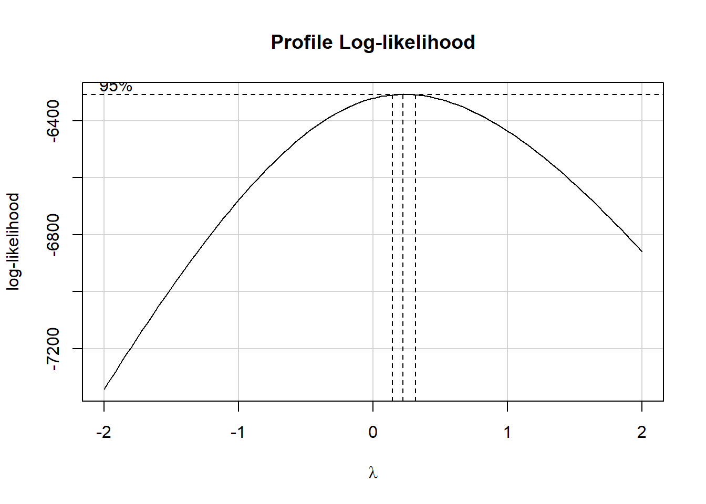
Assessment Quiz - Hypothesis Testing
Question 1: Below is the summary output from a simple linear regression performed in R. What is the value of the missing test statistic?

Answer: 3.481
- Further Explanation: The t-value from a regression in R is found by
taking the “Estimate” and dividing by the “Std. Error”. This is because
R always uses the null hypothesis that the true parameter (for either
the slope or the intercept) is zero. So the t-value is computed by t =
(estimate - 0)/std. error = estimate/std. error
- In this case: 4.4133 / 1.2679 = 3.480795 which rounds to 3.481.
Question 2: Below is the summary output from a simple linear regression performed in R. Compute the 95% confidence interval for the slope estimate.

Answer: (7.701, 9.423)
- Further Explanation: Since a 95% confidence interval is obtained by the formula: estimate +/- margin of error, and the margin of error is given by (t*)(std. error) then we have:
qt(1-0.05/2, 397) #gives the critical value for t* = 1.965957
and std. error = 0.4379 #as shown in the summary output
So,
\[\underbrace{8.5621 - 1.965957 * 0.4379}_\text{lower bound}\]
\[\underbrace{8.5621 + 1.965957 * 0.4379}_\text{Upper bound}\]
If you used instead:
\[8.5621 +/- 2 * 0.4379\]
then you would have still come close to the correct answer, but it would not be as correct as using the actual critical value from the t distribution with 397 degrees of freedom.
Question 3: Suppose a 95% confidence interval for the true regression slope is obtained as (-7.453, -0.947) from a sample of 100 x-y points. What is the p-value for the test of the following hypotheses?
\[H_0 : \beta_1 = -10 \\ H_a : \beta_1 \neq -10\]
Answer: 0.0006175379
- Further explanation: The margin of error can be found from the
confidence interval by using (-7.453 - -0.947)/2 = -3.253. Similarly,
the estimate of the slope can be found by finding the middle of the
confidence interval (-7.453 + -0.947)/2 = -4.2.
- Then, the critical value of the margin of error can be found using qt(1-0.05/2, 100-2) = 1.984467.
- This allows us to recover just the standard error of the slope, which is margin of error / critical value = -3.253/1.984467 = -1.639231.
- Thus, t = (estimate - hypothesized)/std. error = (-4.2 - -10)/-1.639231 = -3.538244, and the corresponding p-value is clearly very small, but can be computed exactly by pt(-3.538244, 98)*2 which gives p-value = 0.0006175379.
Class Activity - Sampling Distributions of Model Parameters
Brother Saunder’s P-value Explanation: - The probability of observing a test statistic/ witnessing data more extreme than what we’ve seen assuming our original belief is correct - how impossible things are looking based on your belief system - ex. how many heads at the flip of a coin would you have to see until you believe that what you are seeing is impossible
Part 1 - Sampling Distributions
- Sample variability means that different samples taken from the same population will give different results
- Understanding how much these samples can vary is crucial for
statistics to be useful
- the act of gathering many samples (there is a LOT of possible samples)
A sampling distribution of a sample statistic is the showing of how sample statistics (like sample means) vary across different samples from the same population. Here are the key points:
- It’s crucial for making inferences about a population based on limited sample data
- Key characteristics:
- Center: The mean of the sampling distribution equals the population mean
- Spread: As sample size increases, the standard deviation of the sampling distribution decreases (Law of Large Numbers)
- Shape: If the population is normal or close to normal, the sampling distribution will be normal for any sample size. For skewed populations, the sampling distribution becomes normal when sample size is greater than 30 (Central Limit Theorem)
This concept is fundamental for statistical inference and understanding how well our sample statistics represent the true population parameters.
Part 2 - For Loops in R
To create a sampling distribution, you must take a lot of samples from a population. This is a great exercise for a computer. A “for loop” is the perfect way to have the computer perform this exercise.
N <- 512
storage <- rep(NA, N)
for (i in 1:N){
storage[i] <- 2*i
cat("i =", i, " and 2*i =", 2*i, " was saved in storage[", i, "]\n") }## i = 1 and 2*i = 2 was saved in storage[ 1 ]
## i = 2 and 2*i = 4 was saved in storage[ 2 ]
## i = 3 and 2*i = 6 was saved in storage[ 3 ]
## i = 4 and 2*i = 8 was saved in storage[ 4 ]
## i = 5 and 2*i = 10 was saved in storage[ 5 ]
## i = 6 and 2*i = 12 was saved in storage[ 6 ]
## i = 7 and 2*i = 14 was saved in storage[ 7 ]
## i = 8 and 2*i = 16 was saved in storage[ 8 ]
## i = 9 and 2*i = 18 was saved in storage[ 9 ]
## i = 10 and 2*i = 20 was saved in storage[ 10 ]
## i = 11 and 2*i = 22 was saved in storage[ 11 ]
## i = 12 and 2*i = 24 was saved in storage[ 12 ]
## i = 13 and 2*i = 26 was saved in storage[ 13 ]
## i = 14 and 2*i = 28 was saved in storage[ 14 ]
## i = 15 and 2*i = 30 was saved in storage[ 15 ]
## i = 16 and 2*i = 32 was saved in storage[ 16 ]
## i = 17 and 2*i = 34 was saved in storage[ 17 ]
## i = 18 and 2*i = 36 was saved in storage[ 18 ]
## i = 19 and 2*i = 38 was saved in storage[ 19 ]
## i = 20 and 2*i = 40 was saved in storage[ 20 ]
## i = 21 and 2*i = 42 was saved in storage[ 21 ]
## i = 22 and 2*i = 44 was saved in storage[ 22 ]
## i = 23 and 2*i = 46 was saved in storage[ 23 ]
## i = 24 and 2*i = 48 was saved in storage[ 24 ]
## i = 25 and 2*i = 50 was saved in storage[ 25 ]
## i = 26 and 2*i = 52 was saved in storage[ 26 ]
## i = 27 and 2*i = 54 was saved in storage[ 27 ]
## i = 28 and 2*i = 56 was saved in storage[ 28 ]
## i = 29 and 2*i = 58 was saved in storage[ 29 ]
## i = 30 and 2*i = 60 was saved in storage[ 30 ]
## i = 31 and 2*i = 62 was saved in storage[ 31 ]
## i = 32 and 2*i = 64 was saved in storage[ 32 ]
## i = 33 and 2*i = 66 was saved in storage[ 33 ]
## i = 34 and 2*i = 68 was saved in storage[ 34 ]
## i = 35 and 2*i = 70 was saved in storage[ 35 ]
## i = 36 and 2*i = 72 was saved in storage[ 36 ]
## i = 37 and 2*i = 74 was saved in storage[ 37 ]
## i = 38 and 2*i = 76 was saved in storage[ 38 ]
## i = 39 and 2*i = 78 was saved in storage[ 39 ]
## i = 40 and 2*i = 80 was saved in storage[ 40 ]
## i = 41 and 2*i = 82 was saved in storage[ 41 ]
## i = 42 and 2*i = 84 was saved in storage[ 42 ]
## i = 43 and 2*i = 86 was saved in storage[ 43 ]
## i = 44 and 2*i = 88 was saved in storage[ 44 ]
## i = 45 and 2*i = 90 was saved in storage[ 45 ]
## i = 46 and 2*i = 92 was saved in storage[ 46 ]
## i = 47 and 2*i = 94 was saved in storage[ 47 ]
## i = 48 and 2*i = 96 was saved in storage[ 48 ]
## i = 49 and 2*i = 98 was saved in storage[ 49 ]
## i = 50 and 2*i = 100 was saved in storage[ 50 ]
## i = 51 and 2*i = 102 was saved in storage[ 51 ]
## i = 52 and 2*i = 104 was saved in storage[ 52 ]
## i = 53 and 2*i = 106 was saved in storage[ 53 ]
## i = 54 and 2*i = 108 was saved in storage[ 54 ]
## i = 55 and 2*i = 110 was saved in storage[ 55 ]
## i = 56 and 2*i = 112 was saved in storage[ 56 ]
## i = 57 and 2*i = 114 was saved in storage[ 57 ]
## i = 58 and 2*i = 116 was saved in storage[ 58 ]
## i = 59 and 2*i = 118 was saved in storage[ 59 ]
## i = 60 and 2*i = 120 was saved in storage[ 60 ]
## i = 61 and 2*i = 122 was saved in storage[ 61 ]
## i = 62 and 2*i = 124 was saved in storage[ 62 ]
## i = 63 and 2*i = 126 was saved in storage[ 63 ]
## i = 64 and 2*i = 128 was saved in storage[ 64 ]
## i = 65 and 2*i = 130 was saved in storage[ 65 ]
## i = 66 and 2*i = 132 was saved in storage[ 66 ]
## i = 67 and 2*i = 134 was saved in storage[ 67 ]
## i = 68 and 2*i = 136 was saved in storage[ 68 ]
## i = 69 and 2*i = 138 was saved in storage[ 69 ]
## i = 70 and 2*i = 140 was saved in storage[ 70 ]
## i = 71 and 2*i = 142 was saved in storage[ 71 ]
## i = 72 and 2*i = 144 was saved in storage[ 72 ]
## i = 73 and 2*i = 146 was saved in storage[ 73 ]
## i = 74 and 2*i = 148 was saved in storage[ 74 ]
## i = 75 and 2*i = 150 was saved in storage[ 75 ]
## i = 76 and 2*i = 152 was saved in storage[ 76 ]
## i = 77 and 2*i = 154 was saved in storage[ 77 ]
## i = 78 and 2*i = 156 was saved in storage[ 78 ]
## i = 79 and 2*i = 158 was saved in storage[ 79 ]
## i = 80 and 2*i = 160 was saved in storage[ 80 ]
## i = 81 and 2*i = 162 was saved in storage[ 81 ]
## i = 82 and 2*i = 164 was saved in storage[ 82 ]
## i = 83 and 2*i = 166 was saved in storage[ 83 ]
## i = 84 and 2*i = 168 was saved in storage[ 84 ]
## i = 85 and 2*i = 170 was saved in storage[ 85 ]
## i = 86 and 2*i = 172 was saved in storage[ 86 ]
## i = 87 and 2*i = 174 was saved in storage[ 87 ]
## i = 88 and 2*i = 176 was saved in storage[ 88 ]
## i = 89 and 2*i = 178 was saved in storage[ 89 ]
## i = 90 and 2*i = 180 was saved in storage[ 90 ]
## i = 91 and 2*i = 182 was saved in storage[ 91 ]
## i = 92 and 2*i = 184 was saved in storage[ 92 ]
## i = 93 and 2*i = 186 was saved in storage[ 93 ]
## i = 94 and 2*i = 188 was saved in storage[ 94 ]
## i = 95 and 2*i = 190 was saved in storage[ 95 ]
## i = 96 and 2*i = 192 was saved in storage[ 96 ]
## i = 97 and 2*i = 194 was saved in storage[ 97 ]
## i = 98 and 2*i = 196 was saved in storage[ 98 ]
## i = 99 and 2*i = 198 was saved in storage[ 99 ]
## i = 100 and 2*i = 200 was saved in storage[ 100 ]
## i = 101 and 2*i = 202 was saved in storage[ 101 ]
## i = 102 and 2*i = 204 was saved in storage[ 102 ]
## i = 103 and 2*i = 206 was saved in storage[ 103 ]
## i = 104 and 2*i = 208 was saved in storage[ 104 ]
## i = 105 and 2*i = 210 was saved in storage[ 105 ]
## i = 106 and 2*i = 212 was saved in storage[ 106 ]
## i = 107 and 2*i = 214 was saved in storage[ 107 ]
## i = 108 and 2*i = 216 was saved in storage[ 108 ]
## i = 109 and 2*i = 218 was saved in storage[ 109 ]
## i = 110 and 2*i = 220 was saved in storage[ 110 ]
## i = 111 and 2*i = 222 was saved in storage[ 111 ]
## i = 112 and 2*i = 224 was saved in storage[ 112 ]
## i = 113 and 2*i = 226 was saved in storage[ 113 ]
## i = 114 and 2*i = 228 was saved in storage[ 114 ]
## i = 115 and 2*i = 230 was saved in storage[ 115 ]
## i = 116 and 2*i = 232 was saved in storage[ 116 ]
## i = 117 and 2*i = 234 was saved in storage[ 117 ]
## i = 118 and 2*i = 236 was saved in storage[ 118 ]
## i = 119 and 2*i = 238 was saved in storage[ 119 ]
## i = 120 and 2*i = 240 was saved in storage[ 120 ]
## i = 121 and 2*i = 242 was saved in storage[ 121 ]
## i = 122 and 2*i = 244 was saved in storage[ 122 ]
## i = 123 and 2*i = 246 was saved in storage[ 123 ]
## i = 124 and 2*i = 248 was saved in storage[ 124 ]
## i = 125 and 2*i = 250 was saved in storage[ 125 ]
## i = 126 and 2*i = 252 was saved in storage[ 126 ]
## i = 127 and 2*i = 254 was saved in storage[ 127 ]
## i = 128 and 2*i = 256 was saved in storage[ 128 ]
## i = 129 and 2*i = 258 was saved in storage[ 129 ]
## i = 130 and 2*i = 260 was saved in storage[ 130 ]
## i = 131 and 2*i = 262 was saved in storage[ 131 ]
## i = 132 and 2*i = 264 was saved in storage[ 132 ]
## i = 133 and 2*i = 266 was saved in storage[ 133 ]
## i = 134 and 2*i = 268 was saved in storage[ 134 ]
## i = 135 and 2*i = 270 was saved in storage[ 135 ]
## i = 136 and 2*i = 272 was saved in storage[ 136 ]
## i = 137 and 2*i = 274 was saved in storage[ 137 ]
## i = 138 and 2*i = 276 was saved in storage[ 138 ]
## i = 139 and 2*i = 278 was saved in storage[ 139 ]
## i = 140 and 2*i = 280 was saved in storage[ 140 ]
## i = 141 and 2*i = 282 was saved in storage[ 141 ]
## i = 142 and 2*i = 284 was saved in storage[ 142 ]
## i = 143 and 2*i = 286 was saved in storage[ 143 ]
## i = 144 and 2*i = 288 was saved in storage[ 144 ]
## i = 145 and 2*i = 290 was saved in storage[ 145 ]
## i = 146 and 2*i = 292 was saved in storage[ 146 ]
## i = 147 and 2*i = 294 was saved in storage[ 147 ]
## i = 148 and 2*i = 296 was saved in storage[ 148 ]
## i = 149 and 2*i = 298 was saved in storage[ 149 ]
## i = 150 and 2*i = 300 was saved in storage[ 150 ]
## i = 151 and 2*i = 302 was saved in storage[ 151 ]
## i = 152 and 2*i = 304 was saved in storage[ 152 ]
## i = 153 and 2*i = 306 was saved in storage[ 153 ]
## i = 154 and 2*i = 308 was saved in storage[ 154 ]
## i = 155 and 2*i = 310 was saved in storage[ 155 ]
## i = 156 and 2*i = 312 was saved in storage[ 156 ]
## i = 157 and 2*i = 314 was saved in storage[ 157 ]
## i = 158 and 2*i = 316 was saved in storage[ 158 ]
## i = 159 and 2*i = 318 was saved in storage[ 159 ]
## i = 160 and 2*i = 320 was saved in storage[ 160 ]
## i = 161 and 2*i = 322 was saved in storage[ 161 ]
## i = 162 and 2*i = 324 was saved in storage[ 162 ]
## i = 163 and 2*i = 326 was saved in storage[ 163 ]
## i = 164 and 2*i = 328 was saved in storage[ 164 ]
## i = 165 and 2*i = 330 was saved in storage[ 165 ]
## i = 166 and 2*i = 332 was saved in storage[ 166 ]
## i = 167 and 2*i = 334 was saved in storage[ 167 ]
## i = 168 and 2*i = 336 was saved in storage[ 168 ]
## i = 169 and 2*i = 338 was saved in storage[ 169 ]
## i = 170 and 2*i = 340 was saved in storage[ 170 ]
## i = 171 and 2*i = 342 was saved in storage[ 171 ]
## i = 172 and 2*i = 344 was saved in storage[ 172 ]
## i = 173 and 2*i = 346 was saved in storage[ 173 ]
## i = 174 and 2*i = 348 was saved in storage[ 174 ]
## i = 175 and 2*i = 350 was saved in storage[ 175 ]
## i = 176 and 2*i = 352 was saved in storage[ 176 ]
## i = 177 and 2*i = 354 was saved in storage[ 177 ]
## i = 178 and 2*i = 356 was saved in storage[ 178 ]
## i = 179 and 2*i = 358 was saved in storage[ 179 ]
## i = 180 and 2*i = 360 was saved in storage[ 180 ]
## i = 181 and 2*i = 362 was saved in storage[ 181 ]
## i = 182 and 2*i = 364 was saved in storage[ 182 ]
## i = 183 and 2*i = 366 was saved in storage[ 183 ]
## i = 184 and 2*i = 368 was saved in storage[ 184 ]
## i = 185 and 2*i = 370 was saved in storage[ 185 ]
## i = 186 and 2*i = 372 was saved in storage[ 186 ]
## i = 187 and 2*i = 374 was saved in storage[ 187 ]
## i = 188 and 2*i = 376 was saved in storage[ 188 ]
## i = 189 and 2*i = 378 was saved in storage[ 189 ]
## i = 190 and 2*i = 380 was saved in storage[ 190 ]
## i = 191 and 2*i = 382 was saved in storage[ 191 ]
## i = 192 and 2*i = 384 was saved in storage[ 192 ]
## i = 193 and 2*i = 386 was saved in storage[ 193 ]
## i = 194 and 2*i = 388 was saved in storage[ 194 ]
## i = 195 and 2*i = 390 was saved in storage[ 195 ]
## i = 196 and 2*i = 392 was saved in storage[ 196 ]
## i = 197 and 2*i = 394 was saved in storage[ 197 ]
## i = 198 and 2*i = 396 was saved in storage[ 198 ]
## i = 199 and 2*i = 398 was saved in storage[ 199 ]
## i = 200 and 2*i = 400 was saved in storage[ 200 ]
## i = 201 and 2*i = 402 was saved in storage[ 201 ]
## i = 202 and 2*i = 404 was saved in storage[ 202 ]
## i = 203 and 2*i = 406 was saved in storage[ 203 ]
## i = 204 and 2*i = 408 was saved in storage[ 204 ]
## i = 205 and 2*i = 410 was saved in storage[ 205 ]
## i = 206 and 2*i = 412 was saved in storage[ 206 ]
## i = 207 and 2*i = 414 was saved in storage[ 207 ]
## i = 208 and 2*i = 416 was saved in storage[ 208 ]
## i = 209 and 2*i = 418 was saved in storage[ 209 ]
## i = 210 and 2*i = 420 was saved in storage[ 210 ]
## i = 211 and 2*i = 422 was saved in storage[ 211 ]
## i = 212 and 2*i = 424 was saved in storage[ 212 ]
## i = 213 and 2*i = 426 was saved in storage[ 213 ]
## i = 214 and 2*i = 428 was saved in storage[ 214 ]
## i = 215 and 2*i = 430 was saved in storage[ 215 ]
## i = 216 and 2*i = 432 was saved in storage[ 216 ]
## i = 217 and 2*i = 434 was saved in storage[ 217 ]
## i = 218 and 2*i = 436 was saved in storage[ 218 ]
## i = 219 and 2*i = 438 was saved in storage[ 219 ]
## i = 220 and 2*i = 440 was saved in storage[ 220 ]
## i = 221 and 2*i = 442 was saved in storage[ 221 ]
## i = 222 and 2*i = 444 was saved in storage[ 222 ]
## i = 223 and 2*i = 446 was saved in storage[ 223 ]
## i = 224 and 2*i = 448 was saved in storage[ 224 ]
## i = 225 and 2*i = 450 was saved in storage[ 225 ]
## i = 226 and 2*i = 452 was saved in storage[ 226 ]
## i = 227 and 2*i = 454 was saved in storage[ 227 ]
## i = 228 and 2*i = 456 was saved in storage[ 228 ]
## i = 229 and 2*i = 458 was saved in storage[ 229 ]
## i = 230 and 2*i = 460 was saved in storage[ 230 ]
## i = 231 and 2*i = 462 was saved in storage[ 231 ]
## i = 232 and 2*i = 464 was saved in storage[ 232 ]
## i = 233 and 2*i = 466 was saved in storage[ 233 ]
## i = 234 and 2*i = 468 was saved in storage[ 234 ]
## i = 235 and 2*i = 470 was saved in storage[ 235 ]
## i = 236 and 2*i = 472 was saved in storage[ 236 ]
## i = 237 and 2*i = 474 was saved in storage[ 237 ]
## i = 238 and 2*i = 476 was saved in storage[ 238 ]
## i = 239 and 2*i = 478 was saved in storage[ 239 ]
## i = 240 and 2*i = 480 was saved in storage[ 240 ]
## i = 241 and 2*i = 482 was saved in storage[ 241 ]
## i = 242 and 2*i = 484 was saved in storage[ 242 ]
## i = 243 and 2*i = 486 was saved in storage[ 243 ]
## i = 244 and 2*i = 488 was saved in storage[ 244 ]
## i = 245 and 2*i = 490 was saved in storage[ 245 ]
## i = 246 and 2*i = 492 was saved in storage[ 246 ]
## i = 247 and 2*i = 494 was saved in storage[ 247 ]
## i = 248 and 2*i = 496 was saved in storage[ 248 ]
## i = 249 and 2*i = 498 was saved in storage[ 249 ]
## i = 250 and 2*i = 500 was saved in storage[ 250 ]
## i = 251 and 2*i = 502 was saved in storage[ 251 ]
## i = 252 and 2*i = 504 was saved in storage[ 252 ]
## i = 253 and 2*i = 506 was saved in storage[ 253 ]
## i = 254 and 2*i = 508 was saved in storage[ 254 ]
## i = 255 and 2*i = 510 was saved in storage[ 255 ]
## i = 256 and 2*i = 512 was saved in storage[ 256 ]
## i = 257 and 2*i = 514 was saved in storage[ 257 ]
## i = 258 and 2*i = 516 was saved in storage[ 258 ]
## i = 259 and 2*i = 518 was saved in storage[ 259 ]
## i = 260 and 2*i = 520 was saved in storage[ 260 ]
## i = 261 and 2*i = 522 was saved in storage[ 261 ]
## i = 262 and 2*i = 524 was saved in storage[ 262 ]
## i = 263 and 2*i = 526 was saved in storage[ 263 ]
## i = 264 and 2*i = 528 was saved in storage[ 264 ]
## i = 265 and 2*i = 530 was saved in storage[ 265 ]
## i = 266 and 2*i = 532 was saved in storage[ 266 ]
## i = 267 and 2*i = 534 was saved in storage[ 267 ]
## i = 268 and 2*i = 536 was saved in storage[ 268 ]
## i = 269 and 2*i = 538 was saved in storage[ 269 ]
## i = 270 and 2*i = 540 was saved in storage[ 270 ]
## i = 271 and 2*i = 542 was saved in storage[ 271 ]
## i = 272 and 2*i = 544 was saved in storage[ 272 ]
## i = 273 and 2*i = 546 was saved in storage[ 273 ]
## i = 274 and 2*i = 548 was saved in storage[ 274 ]
## i = 275 and 2*i = 550 was saved in storage[ 275 ]
## i = 276 and 2*i = 552 was saved in storage[ 276 ]
## i = 277 and 2*i = 554 was saved in storage[ 277 ]
## i = 278 and 2*i = 556 was saved in storage[ 278 ]
## i = 279 and 2*i = 558 was saved in storage[ 279 ]
## i = 280 and 2*i = 560 was saved in storage[ 280 ]
## i = 281 and 2*i = 562 was saved in storage[ 281 ]
## i = 282 and 2*i = 564 was saved in storage[ 282 ]
## i = 283 and 2*i = 566 was saved in storage[ 283 ]
## i = 284 and 2*i = 568 was saved in storage[ 284 ]
## i = 285 and 2*i = 570 was saved in storage[ 285 ]
## i = 286 and 2*i = 572 was saved in storage[ 286 ]
## i = 287 and 2*i = 574 was saved in storage[ 287 ]
## i = 288 and 2*i = 576 was saved in storage[ 288 ]
## i = 289 and 2*i = 578 was saved in storage[ 289 ]
## i = 290 and 2*i = 580 was saved in storage[ 290 ]
## i = 291 and 2*i = 582 was saved in storage[ 291 ]
## i = 292 and 2*i = 584 was saved in storage[ 292 ]
## i = 293 and 2*i = 586 was saved in storage[ 293 ]
## i = 294 and 2*i = 588 was saved in storage[ 294 ]
## i = 295 and 2*i = 590 was saved in storage[ 295 ]
## i = 296 and 2*i = 592 was saved in storage[ 296 ]
## i = 297 and 2*i = 594 was saved in storage[ 297 ]
## i = 298 and 2*i = 596 was saved in storage[ 298 ]
## i = 299 and 2*i = 598 was saved in storage[ 299 ]
## i = 300 and 2*i = 600 was saved in storage[ 300 ]
## i = 301 and 2*i = 602 was saved in storage[ 301 ]
## i = 302 and 2*i = 604 was saved in storage[ 302 ]
## i = 303 and 2*i = 606 was saved in storage[ 303 ]
## i = 304 and 2*i = 608 was saved in storage[ 304 ]
## i = 305 and 2*i = 610 was saved in storage[ 305 ]
## i = 306 and 2*i = 612 was saved in storage[ 306 ]
## i = 307 and 2*i = 614 was saved in storage[ 307 ]
## i = 308 and 2*i = 616 was saved in storage[ 308 ]
## i = 309 and 2*i = 618 was saved in storage[ 309 ]
## i = 310 and 2*i = 620 was saved in storage[ 310 ]
## i = 311 and 2*i = 622 was saved in storage[ 311 ]
## i = 312 and 2*i = 624 was saved in storage[ 312 ]
## i = 313 and 2*i = 626 was saved in storage[ 313 ]
## i = 314 and 2*i = 628 was saved in storage[ 314 ]
## i = 315 and 2*i = 630 was saved in storage[ 315 ]
## i = 316 and 2*i = 632 was saved in storage[ 316 ]
## i = 317 and 2*i = 634 was saved in storage[ 317 ]
## i = 318 and 2*i = 636 was saved in storage[ 318 ]
## i = 319 and 2*i = 638 was saved in storage[ 319 ]
## i = 320 and 2*i = 640 was saved in storage[ 320 ]
## i = 321 and 2*i = 642 was saved in storage[ 321 ]
## i = 322 and 2*i = 644 was saved in storage[ 322 ]
## i = 323 and 2*i = 646 was saved in storage[ 323 ]
## i = 324 and 2*i = 648 was saved in storage[ 324 ]
## i = 325 and 2*i = 650 was saved in storage[ 325 ]
## i = 326 and 2*i = 652 was saved in storage[ 326 ]
## i = 327 and 2*i = 654 was saved in storage[ 327 ]
## i = 328 and 2*i = 656 was saved in storage[ 328 ]
## i = 329 and 2*i = 658 was saved in storage[ 329 ]
## i = 330 and 2*i = 660 was saved in storage[ 330 ]
## i = 331 and 2*i = 662 was saved in storage[ 331 ]
## i = 332 and 2*i = 664 was saved in storage[ 332 ]
## i = 333 and 2*i = 666 was saved in storage[ 333 ]
## i = 334 and 2*i = 668 was saved in storage[ 334 ]
## i = 335 and 2*i = 670 was saved in storage[ 335 ]
## i = 336 and 2*i = 672 was saved in storage[ 336 ]
## i = 337 and 2*i = 674 was saved in storage[ 337 ]
## i = 338 and 2*i = 676 was saved in storage[ 338 ]
## i = 339 and 2*i = 678 was saved in storage[ 339 ]
## i = 340 and 2*i = 680 was saved in storage[ 340 ]
## i = 341 and 2*i = 682 was saved in storage[ 341 ]
## i = 342 and 2*i = 684 was saved in storage[ 342 ]
## i = 343 and 2*i = 686 was saved in storage[ 343 ]
## i = 344 and 2*i = 688 was saved in storage[ 344 ]
## i = 345 and 2*i = 690 was saved in storage[ 345 ]
## i = 346 and 2*i = 692 was saved in storage[ 346 ]
## i = 347 and 2*i = 694 was saved in storage[ 347 ]
## i = 348 and 2*i = 696 was saved in storage[ 348 ]
## i = 349 and 2*i = 698 was saved in storage[ 349 ]
## i = 350 and 2*i = 700 was saved in storage[ 350 ]
## i = 351 and 2*i = 702 was saved in storage[ 351 ]
## i = 352 and 2*i = 704 was saved in storage[ 352 ]
## i = 353 and 2*i = 706 was saved in storage[ 353 ]
## i = 354 and 2*i = 708 was saved in storage[ 354 ]
## i = 355 and 2*i = 710 was saved in storage[ 355 ]
## i = 356 and 2*i = 712 was saved in storage[ 356 ]
## i = 357 and 2*i = 714 was saved in storage[ 357 ]
## i = 358 and 2*i = 716 was saved in storage[ 358 ]
## i = 359 and 2*i = 718 was saved in storage[ 359 ]
## i = 360 and 2*i = 720 was saved in storage[ 360 ]
## i = 361 and 2*i = 722 was saved in storage[ 361 ]
## i = 362 and 2*i = 724 was saved in storage[ 362 ]
## i = 363 and 2*i = 726 was saved in storage[ 363 ]
## i = 364 and 2*i = 728 was saved in storage[ 364 ]
## i = 365 and 2*i = 730 was saved in storage[ 365 ]
## i = 366 and 2*i = 732 was saved in storage[ 366 ]
## i = 367 and 2*i = 734 was saved in storage[ 367 ]
## i = 368 and 2*i = 736 was saved in storage[ 368 ]
## i = 369 and 2*i = 738 was saved in storage[ 369 ]
## i = 370 and 2*i = 740 was saved in storage[ 370 ]
## i = 371 and 2*i = 742 was saved in storage[ 371 ]
## i = 372 and 2*i = 744 was saved in storage[ 372 ]
## i = 373 and 2*i = 746 was saved in storage[ 373 ]
## i = 374 and 2*i = 748 was saved in storage[ 374 ]
## i = 375 and 2*i = 750 was saved in storage[ 375 ]
## i = 376 and 2*i = 752 was saved in storage[ 376 ]
## i = 377 and 2*i = 754 was saved in storage[ 377 ]
## i = 378 and 2*i = 756 was saved in storage[ 378 ]
## i = 379 and 2*i = 758 was saved in storage[ 379 ]
## i = 380 and 2*i = 760 was saved in storage[ 380 ]
## i = 381 and 2*i = 762 was saved in storage[ 381 ]
## i = 382 and 2*i = 764 was saved in storage[ 382 ]
## i = 383 and 2*i = 766 was saved in storage[ 383 ]
## i = 384 and 2*i = 768 was saved in storage[ 384 ]
## i = 385 and 2*i = 770 was saved in storage[ 385 ]
## i = 386 and 2*i = 772 was saved in storage[ 386 ]
## i = 387 and 2*i = 774 was saved in storage[ 387 ]
## i = 388 and 2*i = 776 was saved in storage[ 388 ]
## i = 389 and 2*i = 778 was saved in storage[ 389 ]
## i = 390 and 2*i = 780 was saved in storage[ 390 ]
## i = 391 and 2*i = 782 was saved in storage[ 391 ]
## i = 392 and 2*i = 784 was saved in storage[ 392 ]
## i = 393 and 2*i = 786 was saved in storage[ 393 ]
## i = 394 and 2*i = 788 was saved in storage[ 394 ]
## i = 395 and 2*i = 790 was saved in storage[ 395 ]
## i = 396 and 2*i = 792 was saved in storage[ 396 ]
## i = 397 and 2*i = 794 was saved in storage[ 397 ]
## i = 398 and 2*i = 796 was saved in storage[ 398 ]
## i = 399 and 2*i = 798 was saved in storage[ 399 ]
## i = 400 and 2*i = 800 was saved in storage[ 400 ]
## i = 401 and 2*i = 802 was saved in storage[ 401 ]
## i = 402 and 2*i = 804 was saved in storage[ 402 ]
## i = 403 and 2*i = 806 was saved in storage[ 403 ]
## i = 404 and 2*i = 808 was saved in storage[ 404 ]
## i = 405 and 2*i = 810 was saved in storage[ 405 ]
## i = 406 and 2*i = 812 was saved in storage[ 406 ]
## i = 407 and 2*i = 814 was saved in storage[ 407 ]
## i = 408 and 2*i = 816 was saved in storage[ 408 ]
## i = 409 and 2*i = 818 was saved in storage[ 409 ]
## i = 410 and 2*i = 820 was saved in storage[ 410 ]
## i = 411 and 2*i = 822 was saved in storage[ 411 ]
## i = 412 and 2*i = 824 was saved in storage[ 412 ]
## i = 413 and 2*i = 826 was saved in storage[ 413 ]
## i = 414 and 2*i = 828 was saved in storage[ 414 ]
## i = 415 and 2*i = 830 was saved in storage[ 415 ]
## i = 416 and 2*i = 832 was saved in storage[ 416 ]
## i = 417 and 2*i = 834 was saved in storage[ 417 ]
## i = 418 and 2*i = 836 was saved in storage[ 418 ]
## i = 419 and 2*i = 838 was saved in storage[ 419 ]
## i = 420 and 2*i = 840 was saved in storage[ 420 ]
## i = 421 and 2*i = 842 was saved in storage[ 421 ]
## i = 422 and 2*i = 844 was saved in storage[ 422 ]
## i = 423 and 2*i = 846 was saved in storage[ 423 ]
## i = 424 and 2*i = 848 was saved in storage[ 424 ]
## i = 425 and 2*i = 850 was saved in storage[ 425 ]
## i = 426 and 2*i = 852 was saved in storage[ 426 ]
## i = 427 and 2*i = 854 was saved in storage[ 427 ]
## i = 428 and 2*i = 856 was saved in storage[ 428 ]
## i = 429 and 2*i = 858 was saved in storage[ 429 ]
## i = 430 and 2*i = 860 was saved in storage[ 430 ]
## i = 431 and 2*i = 862 was saved in storage[ 431 ]
## i = 432 and 2*i = 864 was saved in storage[ 432 ]
## i = 433 and 2*i = 866 was saved in storage[ 433 ]
## i = 434 and 2*i = 868 was saved in storage[ 434 ]
## i = 435 and 2*i = 870 was saved in storage[ 435 ]
## i = 436 and 2*i = 872 was saved in storage[ 436 ]
## i = 437 and 2*i = 874 was saved in storage[ 437 ]
## i = 438 and 2*i = 876 was saved in storage[ 438 ]
## i = 439 and 2*i = 878 was saved in storage[ 439 ]
## i = 440 and 2*i = 880 was saved in storage[ 440 ]
## i = 441 and 2*i = 882 was saved in storage[ 441 ]
## i = 442 and 2*i = 884 was saved in storage[ 442 ]
## i = 443 and 2*i = 886 was saved in storage[ 443 ]
## i = 444 and 2*i = 888 was saved in storage[ 444 ]
## i = 445 and 2*i = 890 was saved in storage[ 445 ]
## i = 446 and 2*i = 892 was saved in storage[ 446 ]
## i = 447 and 2*i = 894 was saved in storage[ 447 ]
## i = 448 and 2*i = 896 was saved in storage[ 448 ]
## i = 449 and 2*i = 898 was saved in storage[ 449 ]
## i = 450 and 2*i = 900 was saved in storage[ 450 ]
## i = 451 and 2*i = 902 was saved in storage[ 451 ]
## i = 452 and 2*i = 904 was saved in storage[ 452 ]
## i = 453 and 2*i = 906 was saved in storage[ 453 ]
## i = 454 and 2*i = 908 was saved in storage[ 454 ]
## i = 455 and 2*i = 910 was saved in storage[ 455 ]
## i = 456 and 2*i = 912 was saved in storage[ 456 ]
## i = 457 and 2*i = 914 was saved in storage[ 457 ]
## i = 458 and 2*i = 916 was saved in storage[ 458 ]
## i = 459 and 2*i = 918 was saved in storage[ 459 ]
## i = 460 and 2*i = 920 was saved in storage[ 460 ]
## i = 461 and 2*i = 922 was saved in storage[ 461 ]
## i = 462 and 2*i = 924 was saved in storage[ 462 ]
## i = 463 and 2*i = 926 was saved in storage[ 463 ]
## i = 464 and 2*i = 928 was saved in storage[ 464 ]
## i = 465 and 2*i = 930 was saved in storage[ 465 ]
## i = 466 and 2*i = 932 was saved in storage[ 466 ]
## i = 467 and 2*i = 934 was saved in storage[ 467 ]
## i = 468 and 2*i = 936 was saved in storage[ 468 ]
## i = 469 and 2*i = 938 was saved in storage[ 469 ]
## i = 470 and 2*i = 940 was saved in storage[ 470 ]
## i = 471 and 2*i = 942 was saved in storage[ 471 ]
## i = 472 and 2*i = 944 was saved in storage[ 472 ]
## i = 473 and 2*i = 946 was saved in storage[ 473 ]
## i = 474 and 2*i = 948 was saved in storage[ 474 ]
## i = 475 and 2*i = 950 was saved in storage[ 475 ]
## i = 476 and 2*i = 952 was saved in storage[ 476 ]
## i = 477 and 2*i = 954 was saved in storage[ 477 ]
## i = 478 and 2*i = 956 was saved in storage[ 478 ]
## i = 479 and 2*i = 958 was saved in storage[ 479 ]
## i = 480 and 2*i = 960 was saved in storage[ 480 ]
## i = 481 and 2*i = 962 was saved in storage[ 481 ]
## i = 482 and 2*i = 964 was saved in storage[ 482 ]
## i = 483 and 2*i = 966 was saved in storage[ 483 ]
## i = 484 and 2*i = 968 was saved in storage[ 484 ]
## i = 485 and 2*i = 970 was saved in storage[ 485 ]
## i = 486 and 2*i = 972 was saved in storage[ 486 ]
## i = 487 and 2*i = 974 was saved in storage[ 487 ]
## i = 488 and 2*i = 976 was saved in storage[ 488 ]
## i = 489 and 2*i = 978 was saved in storage[ 489 ]
## i = 490 and 2*i = 980 was saved in storage[ 490 ]
## i = 491 and 2*i = 982 was saved in storage[ 491 ]
## i = 492 and 2*i = 984 was saved in storage[ 492 ]
## i = 493 and 2*i = 986 was saved in storage[ 493 ]
## i = 494 and 2*i = 988 was saved in storage[ 494 ]
## i = 495 and 2*i = 990 was saved in storage[ 495 ]
## i = 496 and 2*i = 992 was saved in storage[ 496 ]
## i = 497 and 2*i = 994 was saved in storage[ 497 ]
## i = 498 and 2*i = 996 was saved in storage[ 498 ]
## i = 499 and 2*i = 998 was saved in storage[ 499 ]
## i = 500 and 2*i = 1000 was saved in storage[ 500 ]
## i = 501 and 2*i = 1002 was saved in storage[ 501 ]
## i = 502 and 2*i = 1004 was saved in storage[ 502 ]
## i = 503 and 2*i = 1006 was saved in storage[ 503 ]
## i = 504 and 2*i = 1008 was saved in storage[ 504 ]
## i = 505 and 2*i = 1010 was saved in storage[ 505 ]
## i = 506 and 2*i = 1012 was saved in storage[ 506 ]
## i = 507 and 2*i = 1014 was saved in storage[ 507 ]
## i = 508 and 2*i = 1016 was saved in storage[ 508 ]
## i = 509 and 2*i = 1018 was saved in storage[ 509 ]
## i = 510 and 2*i = 1020 was saved in storage[ 510 ]
## i = 511 and 2*i = 1022 was saved in storage[ 511 ]
## i = 512 and 2*i = 1024 was saved in storage[ 512 ]Part 3 - Creating Sampling Distributions
(can find under the “inference parameters section of the 425 section”)
Create a simulation in R that uses a for loop to show the sampling distribution of \(b_0\) and \(b_1\).
# Hint 1
n <- 40 # sample size (number of dots)
Xi <- rep(seq(30, 100, length.out=n/2), each=2) #n must be even.
Yi <- 2.5 + 0*Xi + rnorm(n, 0, 10.2)
# Hint 2
mylm <- lm(Yi ~ Xi)
plot(Yi ~ Xi, ylim=c(50,350))
abline(mylm)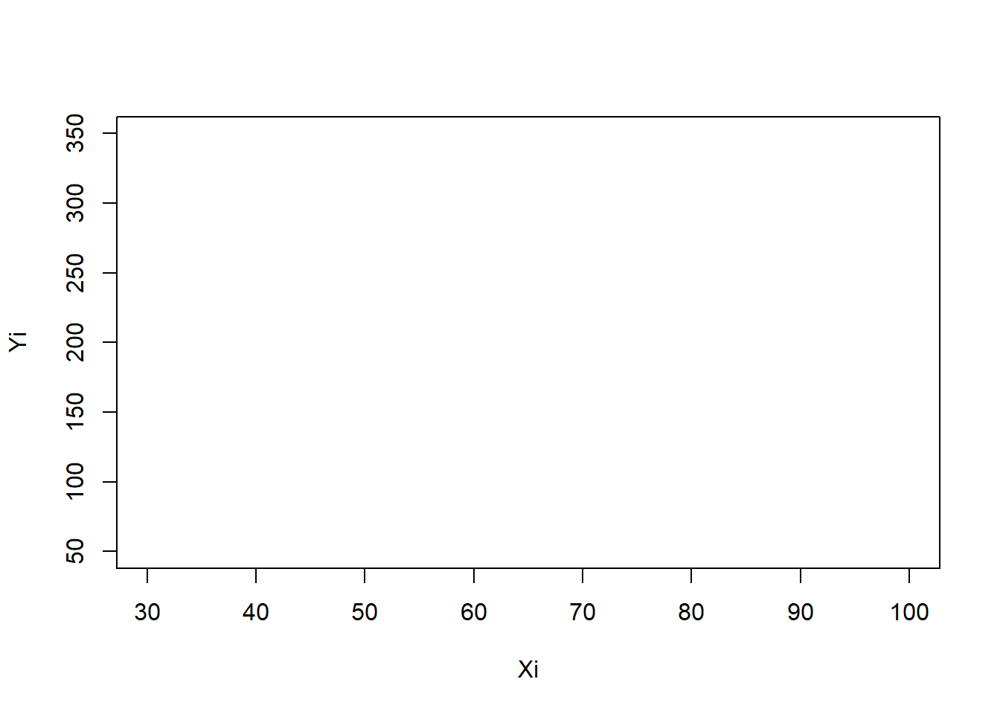
## (Intercept) Xi
## -0.23112187 0.09051125## (Intercept)
## -0.2311219## Xi
## 0.09051125mydata <- data.frame(x=Xi, y=Yi)
ggplot(mydata, aes(x=x, y=y)) +
geom_point() +
geom_smooth(method="lm", se= T, formula = y~x)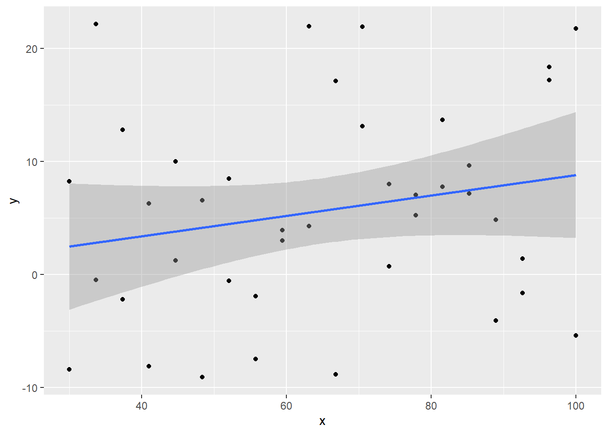
- predictions will NOT LAND in that zone, we believe this is
where the truth lives!
- ggplot is putting the sampling distribution on your graph showing you visually a confidence interval for your line
Class Activity - Hypothesis Tests for Model Parameters
Part 1 - Standard Errors
Sample size, spread of the data, and MSE (no control over, nature controls that) - equations don’t care what \(b_0\) and \(b_1\) are
Class Activity - Test Statistics, t Distributions, and P-values
Week 5 | Confidence and Prediction Intervals
Skill Quiz - Confidence and Prediction Intervals
Problem 1
Install the alr3 library in R:
install.packages("alr3").
From library(alr3) open the BGSall data set
in R. As stated in the help file for this data set, this data is a
collection of measurements on “children born in 1928-29 in Berkeley,
CA.”
> ?BGSall
> View(BGSall)
A standing tradition is that if you measure a child when they are 2-years old, and double their height, this will give a good prediction on their final adult height. Let’s see if this is true.
Perform a regression that could predict a child’s 18-year old height from their 2-year old height.
Part (a)
Type out the mathematical equation for this regression model and label both \(Y\) and \(X\) in the equation.
\[ \underbrace{Y_i}_\text{Height 18} = \beta_0 + \beta_1 \underbrace{X_i}_\text{Height 2} + \epsilon_i \quad \text{where} \ \epsilon_i \sim N(0, \sigma^2) \]
Part (b)
Plot a scatterplot of the data with your regression line overlaid. Write out the fitted regression equation.
\[ \hat{Y}_i = 45.7966 + 1.441 X_i \]
Part (c)
Report the test statistics and p-values for the following hypotheses. (The hypotheses about \(\beta_0\) claim that at age 0-years, a child should have height 0 cm. The hypotheses about \(\beta_1\) claim that height doubles from age 2 to 18.)
\[ \begin{array}{l} H_0: \beta_0 = 0 \\ H_a: \beta_0 \neq 0 \\ \end{array} \quad \begin{array}{l} H_0: \beta_1 = 2 \\ H_a: \beta_1 \neq 2 \\ \end{array} \]
Part (d)
State the slope, y-intercept, and \(R^2\) of this regression. Further, provide 95% confidence intervals for the slope and intercept. Interpret the values.
Part (e)
Create a residuals vs fitted-values plot and Q-Q Plot of the residuals for this regression. What do these plots show?
Part (f)
A certain stats teacher at BYU-Idaho has a son named Andrew who turns 2-years old in a couple of weeks. He is currently 2 feet 9 inches tall. Predict his 18-year old height in centimeters with 95% confidence.
Problem 2
Open the wblake data set from library(alr4).
> ?wblake
> View(wblake)
If you love fishing, then you might like this data. The goal of this data was to see if there was a link in the radius size of a key “Scale” of a fish and the overall “Length” of the fish.
Part (a)
Type out the mathematical equation for this regression model and label both \(Y\) and \(X\) in the equation.
\[ \underbrace{Y_i}_\text{Scale} = \beta_0 + \beta_1 \underbrace{X_i}_\text{Length} + \epsilon_i \quad \text{where} \ \epsilon_i \sim N(0, \sigma^2) \]
Part (b)
Plot a scatterplot of the data with your regression line overlaid. Write out the fitted regression equation. State the \(R^2\) value of the regression.
| Estimate | Std. Error | t value | Pr(>|t|) | |
|---|---|---|---|---|
| (Intercept) | -1.431 | 0.1357 | -10.55 | 2.544e-23 |
| Length | 0.0378 | 0.0006644 | 56.9 | 3.706e-204 |
| Observations | Residual Std. Error | \(R^2\) | Adjusted \(R^2\) |
|---|---|---|---|
| 439 | 0.9288 | 0.8811 | 0.8808 |
Part (c)
Diagnose the regression with a residuals vs. fitted-values plot. Determine which Y-transformation is suggested for this data.
par(mfrow=c(1,2))
plot(fishy.lm, which=1)
qqPlot(fishy.lm$residuals, main="Q-Q Plot", col="darkolivegreen", col.lines="darkgreen",pch= 19, id=FALSE)Part (d)
Perform a regression of the form \(Y' = Y^\lambda\). Use your answer to Part (c) to select \(\lambda\).
Plot the regression in the transformed space, \(Y' \sim X\) and add the fitted regression to the plot.
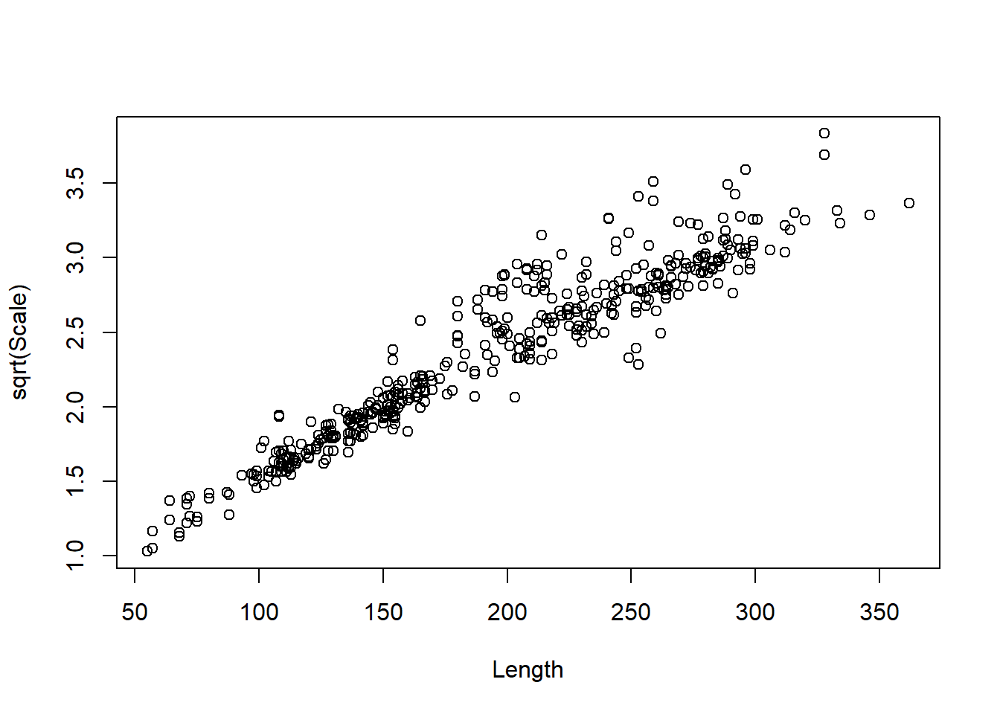
Part (e)
State the slope, y-intercept, and \(R^2\) of this transformed regression.
| Estimate | Std. Error | t value | Pr(>|t|) | |
|---|---|---|---|---|
| (Intercept) | 0.7882 | 0.02638 | 29.88 | 1.164e-107 |
| Length | 0.008111 | 0.0001292 | 62.79 | 8.07e-221 |
| Observations | Residual Std. Error | \(R^2\) | Adjusted \(R^2\) |
|---|---|---|---|
| 439 | 0.1806 | 0.9002 | 0.9 |
Part (f)
Create a residuals vs fitted-values plot and Q-Q Plot of the residuals for this trasnformed regression. Does this regression look better than the original?
par(mfrow=c(1,2))
plot(fisher.lm, which=1)
qqPlot(fisher.lm$residuals, main="Q-Q Plot", col="darkolivegreen", col.lines="darkgreen",pch= 19, id=FALSE)Part (g)
Untransform the fitted regression equation and draw it on a scatterplot of the original data. Include the original regression line on this plot.
Part (h)
Place two prediction intervals for the Scale radius when the Length of the fish is 250 on your scatterplot of the data in the original units.
Show the prediction interval from the original regression in the original units.
Show the prediction interval from the transformed regression back on the original units.
## fit lwr upr
## 1 8.019889 6.19091 9.848869## fit lwr upr
## 1 7.93008 6.053607 10.0595